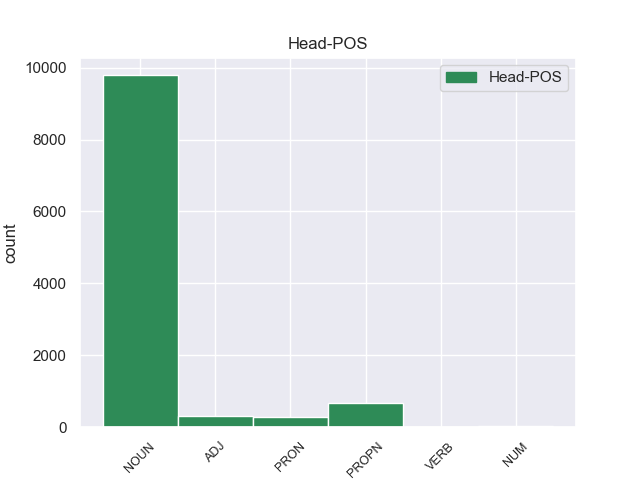
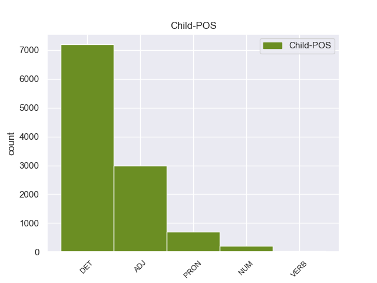

Distribution of features within this leaf



Agreement Rules sorted by frequency.
When the head token is DET and the dependent token is DET.
1 Αυτό _ _ _ _ 0 _ _ _
2 μπορεί _ _ _ _ 0 _ _ _
3 να _ _ _ _ 0 _ _ _
4 μην _ _ _ _ 0 _ _ _
5 οδηγήσει _ _ _ _ 0 _ _ _
6 σ _ _ _ _ 0 _ _ _
7 τη _ _ _ _ 0 _ _ _
8 λήξη _ _ _ _ 0 _ _ _
9 του _ _ _ _ 0 _ _ _
10 εν _ _ _ _ 0 _ _ _
11 λόγω _ _ _ _ 0 _ _ _
12 ζητήματος _ _ _ _ 0 _ _ _
13 αλλά _ _ _ _ 0 _ _ _
14 , _ _ _ _ 0 _ _ _
15 σ _ _ _ _ 0 _ _ _
16 τη _ _ _ _ 0 _ _ _
17 μορφή _ _ _ _ 0 _ _ _
18 υπό _ _ _ _ 0 _ _ _
19 την _ _ _ _ 0 _ _ _
20 οποία _ _ _ _ 0 _ _ _
21 την _ _ _ _ 0 _ _ _
22 λάβαμε _ _ _ _ 0 _ _ _
23 , _ _ _ _ 0 _ _ _
24 αυτή _ _ _ _ 0 _ _ _
25 η _ _ _ _ 0 _ _ _
26 αίτηση _ _ _ _ 0 _ _ _
27 άρσης _ _ _ _ 0 _ _ _
28 της _ _ _ _ 0 _ _ _
29 ασυλίας _ _ _ _ 0 _ _ _
30 ήταν _ _ _ _ 0 _ _ _
31 , _ _ _ _ 0 _ _ _
32 κατά _ _ _ _ 0 _ _ _
33 την _ _ _ _ 0 _ _ _
34 άποψη _ _ _ _ 0 _ _ _
35 της ο DET _ Case=Gen|Definite=Def|Gender=Fem|Number=Sing|PronType=Art 36 det _ _
36 Επιτροπής επιτροπής DET _ Case=Acc|Gender=Fem|Number=Sing 0 _ _ _
37 Νομικών _ _ _ _ 0 _ _ _
38 Θεμάτων _ _ _ _ 0 _ _ _
39 , _ _ _ _ 0 _ _ _
40 απαράδεκτη _ _ _ _ 0 _ _ _
41 , _ _ _ _ 0 _ _ _
42 άποψη _ _ _ _ 0 _ _ _
43 την _ _ _ _ 0 _ _ _
44 οποία _ _ _ _ 0 _ _ _
45 συνιστώ _ _ _ _ 0 _ _ _
46 σ _ _ _ _ 0 _ _ _
47 το _ _ _ _ 0 _ _ _
48 Σώμα _ _ _ _ 0 _ _ _
49 να _ _ _ _ 0 _ _ _
50 υιοθετήσει _ _ _ _ 0 _ _ _
51 . _ _ _ _ 0 _ _ _
When the head token is DET and the dependent token is DET. and the head token is VERB and the dependent token is DET.
1 Σ _ _ _ _ 0 _ _ _
2 την _ _ _ _ 0 _ _ _
3 παρούσα _ _ _ _ 0 _ _ _
4 μορφή _ _ _ _ 0 _ _ _
5 της _ _ _ _ 0 _ _ _
6 , _ _ _ _ 0 _ _ _
7 η ο DET _ Case=Nom|Definite=Def|Gender=Fem|Number=Sing|PronType=Art 8 det _ _
8 αίτηση ο VERB _ Case=Acc|Gender=Fem|Number=Sing 0 _ _ _
9 άρσης _ _ _ _ 0 _ _ _
10 της _ _ _ _ 0 _ _ _
11 ασυλίας _ _ _ _ 0 _ _ _
12 παρουσιάζεται _ _ _ _ 0 _ _ _
13 απαράδεκτα _ _ _ _ 0 _ _ _
14 ασαφής _ _ _ _ 0 _ _ _
15 . _ _ _ _ 0 _ _ _
When the head token is DET and the dependent token is DET. and the head token is VERB and the dependent token is DET. and the head token is ADJ and the dependent token is DET.
1 πρόκειται _ _ _ _ 0 _ _ _
2 για _ _ _ _ 0 _ _ _
3 αυτό _ _ _ _ 0 _ _ _
4 το _ _ _ _ 0 _ _ _
5 οποίο _ _ _ _ 0 _ _ _
6 αποκαλύφθηκε _ _ _ _ 0 _ _ _
7 κατά _ _ _ _ 0 _ _ _
8 τη _ _ _ _ 0 _ _ _
9 διάρκεια _ _ _ _ 0 _ _ _
10 αυτής _ _ _ _ 0 _ _ _
11 της _ _ _ _ 0 _ _ _
12 διαδικασίας _ _ _ _ 0 _ _ _
13 , _ _ _ _ 0 _ _ _
14 ότι _ _ _ _ 0 _ _ _
15 ο _ _ _ _ 0 _ _ _
16 Εισαγγελέας εισαγγελέας ADJ _ Case=Gen|Gender=Fem|Number=Sing 0 _ _ _
17 κάποια _ _ _ _ 0 _ _ _
18 στιγμή _ _ _ _ 0 _ _ _
19 ζήτησε _ _ _ _ 0 _ _ _
20 από _ _ _ _ 0 _ _ _
21 την _ _ _ _ 0 _ _ _
22 Πρόεδρο _ _ _ _ 0 _ _ _
23 του ο DET _ Case=Gen|Definite=Def|Gender=Fem|Number=Sing|PronType=Art 16 det _ _
24 Σώματος _ _ _ _ 0 _ _ _
25 , _ _ _ _ 0 _ _ _
26 την _ _ _ _ 0 _ _ _
27 προκάτοχό _ _ _ _ 0 _ _ _
28 σας _ _ _ _ 0 _ _ _
29 , _ _ _ _ 0 _ _ _
30 λεπτομέρειες _ _ _ _ 0 _ _ _
31 για _ _ _ _ 0 _ _ _
32 την _ _ _ _ 0 _ _ _
33 ψήφο _ _ _ _ 0 _ _ _
34 που _ _ _ _ 0 _ _ _
35 έχουν _ _ _ _ 0 _ _ _
36 δώσει _ _ _ _ 0 _ _ _
37 οι _ _ _ _ 0 _ _ _
38 δύο _ _ _ _ 0 _ _ _
39 συγκεκριμένοι _ _ _ _ 0 _ _ _
40 βουλευτές _ _ _ _ 0 _ _ _
41 προκειμένου _ _ _ _ 0 _ _ _
42 να _ _ _ _ 0 _ _ _
43 διευκρινιστεί _ _ _ _ 0 _ _ _
44 περαιτέρω _ _ _ _ 0 _ _ _
45 η _ _ _ _ 0 _ _ _
46 πιθανότητα _ _ _ _ 0 _ _ _
47 να _ _ _ _ 0 _ _ _
48 είχαν _ _ _ _ 0 _ _ _
49 ασκήσει _ _ _ _ 0 _ _ _
50 αθέμιτη _ _ _ _ 0 _ _ _
51 επιρροή _ _ _ _ 0 _ _ _
52 . _ _ _ _ 0 _ _ _
When the head token is DET and the dependent token is DET. and the head token is VERB and the dependent token is DET. and the head token is ADJ and the dependent token is DET. and the head token is VERB and the dependent token is ADJ.
1 Θα _ _ _ _ 0 _ _ _
2 ήθελα _ _ _ _ 0 _ _ _
3 να _ _ _ _ 0 _ _ _
4 επιστήσω _ _ _ _ 0 _ _ _
5 την _ _ _ _ 0 _ _ _
6 προσοχή _ _ _ _ 0 _ _ _
7 όλων _ _ _ _ 0 _ _ _
8 των _ _ _ _ 0 _ _ _
9 συναδέλφων _ _ _ _ 0 _ _ _
10 σ _ _ _ _ 0 _ _ _
11 το _ _ _ _ 0 _ _ _
12 γεγονός _ _ _ _ 0 _ _ _
13 ότι _ _ _ _ 0 _ _ _
14 , _ _ _ _ 0 _ _ _
15 εάν _ _ _ _ 0 _ _ _
16 υπάρχουν _ _ _ _ 0 _ _ _
17 κάποιες _ _ _ _ 0 _ _ _
18 ελευθερίες _ _ _ _ 0 _ _ _
19 οι _ _ _ _ 0 _ _ _
20 οποίες _ _ _ _ 0 _ _ _
21 είναι _ _ _ _ 0 _ _ _
22 ζωτικής _ _ _ _ 0 _ _ _
23 σημασίας _ _ _ _ 0 _ _ _
24 για _ _ _ _ 0 _ _ _
25 την _ _ _ _ 0 _ _ _
26 άσκηση άσκηση VERB _ Case=Acc|Gender=Fem|Number=Sing 0 _ _ _
27 του _ _ _ _ 0 _ _ _
28 λειτουργήματος _ _ _ _ 0 _ _ _
29 της _ _ _ _ 0 _ _ _
30 δημόσιας _ _ _ _ 0 _ _ _
31 εκπροσώπησης _ _ _ _ 0 _ _ _
32 , _ _ _ _ 0 _ _ _
33 ιδίως _ _ _ _ 0 _ _ _
34 για _ _ _ _ 0 _ _ _
35 ένα _ _ _ _ 0 _ _ _
36 Κοινοβούλιο _ _ _ _ 0 _ _ _
37 σαν _ _ _ _ 0 _ _ _
38 το _ _ _ _ 0 _ _ _
39 δικό _ _ _ _ 0 _ _ _
40 μας _ _ _ _ 0 _ _ _
41 , _ _ _ _ 0 _ _ _
42 η _ _ _ _ 0 _ _ _
43 ελευθερία _ _ _ _ 0 _ _ _
44 της _ _ _ _ 0 _ _ _
45 επικοινωνίας επικοινωνίας ADJ _ Case=Acc|Gender=Fem|Number=Sing 26 nmod _ _
46 με _ _ _ _ 0 _ _ _
47 άλλους _ _ _ _ 0 _ _ _
48 πολίτες _ _ _ _ 0 _ _ _
49 και _ _ _ _ 0 _ _ _
50 με _ _ _ _ 0 _ _ _
51 τους _ _ _ _ 0 _ _ _
52 πολίτες _ _ _ _ 0 _ _ _
53 τρίτων _ _ _ _ 0 _ _ _
54 χωρών _ _ _ _ 0 _ _ _
55 , _ _ _ _ 0 _ _ _
56 καθώς _ _ _ _ 0 _ _ _
57 και _ _ _ _ 0 _ _ _
58 η _ _ _ _ 0 _ _ _
59 ελευθερία _ _ _ _ 0 _ _ _
60 μετακίνησης _ _ _ _ 0 _ _ _
61 , _ _ _ _ 0 _ _ _
62 είναι _ _ _ _ 0 _ _ _
63 κρίσιμες _ _ _ _ 0 _ _ _
64 για _ _ _ _ 0 _ _ _
65 τη _ _ _ _ 0 _ _ _
66 διεκπεραίωση _ _ _ _ 0 _ _ _
67 του _ _ _ _ 0 _ _ _
68 έργου _ _ _ _ 0 _ _ _
69 μας _ _ _ _ 0 _ _ _
70 . _ _ _ _ 0 _ _ _
When the head token is DET and the dependent token is DET. and the head token is VERB and the dependent token is DET. and the head token is ADJ and the dependent token is DET. and the head token is VERB and the dependent token is ADJ. and the head token is VERB and the dependent token is VERB.
1 Σ _ _ _ _ 0 _ _ _
2 την _ _ _ _ 0 _ _ _
3 παρούσα παρούσα VERB _ Case=Acc|Gender=Fem|Number=Sing 8 nmod _ _
4 μορφή _ _ _ _ 0 _ _ _
5 της _ _ _ _ 0 _ _ _
6 , _ _ _ _ 0 _ _ _
7 η _ _ _ _ 0 _ _ _
8 αίτηση ο VERB _ Case=Acc|Gender=Fem|Number=Sing 0 _ _ _
9 άρσης _ _ _ _ 0 _ _ _
10 της _ _ _ _ 0 _ _ _
11 ασυλίας _ _ _ _ 0 _ _ _
12 παρουσιάζεται _ _ _ _ 0 _ _ _
13 απαράδεκτα _ _ _ _ 0 _ _ _
14 ασαφής _ _ _ _ 0 _ _ _
15 . _ _ _ _ 0 _ _ _
When the head token is DET and the dependent token is DET. and the head token is VERB and the dependent token is DET. and the head token is ADJ and the dependent token is DET. and the head token is VERB and the dependent token is ADJ. and the head token is VERB and the dependent token is VERB. and the head token is ADJ and the dependent token is ADJ.
1 Τόσο _ _ _ _ 0 _ _ _
2 το _ _ _ _ 0 _ _ _
3 ζήτημα _ _ _ _ 0 _ _ _
4 της _ _ _ _ 0 _ _ _
5 ασυλίας _ _ _ _ 0 _ _ _
6 όσο _ _ _ _ 0 _ _ _
7 και _ _ _ _ 0 _ _ _
8 η _ _ _ _ 0 _ _ _
9 αίτηση _ _ _ _ 0 _ _ _
10 για _ _ _ _ 0 _ _ _
11 άρση _ _ _ _ 0 _ _ _
12 της _ _ _ _ 0 _ _ _
13 έχουν _ _ _ _ 0 _ _ _
14 σχέση _ _ _ _ 0 _ _ _
15 μόνο _ _ _ _ 0 _ _ _
16 με _ _ _ _ 0 _ _ _
17 το _ _ _ _ 0 _ _ _
18 εάν _ _ _ _ 0 _ _ _
19 το _ _ _ _ 0 _ _ _
20 Δικαστήριο _ _ _ _ 0 _ _ _
21 μπορεί _ _ _ _ 0 _ _ _
22 να _ _ _ _ 0 _ _ _
23 εκδώσει _ _ _ _ 0 _ _ _
24 δεσμευτικά _ _ _ _ 0 _ _ _
25 βουλεύματα _ _ _ _ 0 _ _ _
26 για _ _ _ _ 0 _ _ _
27 τον _ _ _ _ 0 _ _ _
28 περιορισμό περιορισμό ADJ _ Case=Acc|Gender=Fem|Number=Sing 0 _ _ _
29 της _ _ _ _ 0 _ _ _
30 ελεύθερης ελεύθερης ADJ _ Case=Acc|Gender=Fem|Number=Sing 28 nmod _ _
31 μετακίνησης _ _ _ _ 0 _ _ _
32 των _ _ _ _ 0 _ _ _
33 βουλευτών _ _ _ _ 0 _ _ _
34 του _ _ _ _ 0 _ _ _
35 Ευρωπαϊκού _ _ _ _ 0 _ _ _
36 Κοινοβουλίου _ _ _ _ 0 _ _ _
37 ή _ _ _ _ 0 _ _ _
38 την _ _ _ _ 0 _ _ _
39 ελευθερία _ _ _ _ 0 _ _ _
40 τους _ _ _ _ 0 _ _ _
41 να _ _ _ _ 0 _ _ _
42 έρχονται _ _ _ _ 0 _ _ _
43 σε _ _ _ _ 0 _ _ _
44 επικοινωνία _ _ _ _ 0 _ _ _
45 με _ _ _ _ 0 _ _ _
46 άλλα _ _ _ _ 0 _ _ _
47 πρόσωπα _ _ _ _ 0 _ _ _
48 . _ _ _ _ 0 _ _ _
When the head token is DET and the dependent token is DET. and the head token is VERB and the dependent token is DET. and the head token is ADJ and the dependent token is DET. and the head token is VERB and the dependent token is ADJ. and the head token is VERB and the dependent token is VERB. and the head token is ADJ and the dependent token is ADJ. and the head token is DET and the dependent token is ADJ.
1 Ο _ _ _ _ 0 _ _ _
2 Πρόεδρος _ _ _ _ 0 _ _ _
3 της _ _ _ _ 0 _ _ _
4 Ευρωπαϊκής ευρωπαϊκής ADJ _ Case=Gen|Gender=Fem|Number=Sing 5 amod _ _
5 Επιτροπής επιτροπής DET _ Case=Gen|Gender=Fem|Number=Sing 0 _ _ _
6 , _ _ _ _ 0 _ _ _
7 Μανουέλ _ _ _ _ 0 _ _ _
8 Μπαρόζο _ _ _ _ 0 _ _ _
9 , _ _ _ _ 0 _ _ _
10 και _ _ _ _ 0 _ _ _
11 ο _ _ _ _ 0 _ _ _
12 Επικεφαλής _ _ _ _ 0 _ _ _
13 των _ _ _ _ 0 _ _ _
14 Φιλελεύθερων _ _ _ _ 0 _ _ _
15 του _ _ _ _ 0 _ _ _
16 Ευρωκοινοβουλίου _ _ _ _ 0 _ _ _
17 και _ _ _ _ 0 _ _ _
18 πρώην _ _ _ _ 0 _ _ _
19 Πρωθυπουργός _ _ _ _ 0 _ _ _
20 του _ _ _ _ 0 _ _ _
21 Βελγίου _ _ _ _ 0 _ _ _
22 , _ _ _ _ 0 _ _ _
23 Γκι _ _ _ _ 0 _ _ _
24 Φέρχοφστατ _ _ _ _ 0 _ _ _
25 , _ _ _ _ 0 _ _ _
26 εξέφρασαν _ _ _ _ 0 _ _ _
27 τα _ _ _ _ 0 _ _ _
28 συλληπήτηρια _ _ _ _ 0 _ _ _
29 τους _ _ _ _ 0 _ _ _
30 σ _ _ _ _ 0 _ _ _
31 τις _ _ _ _ 0 _ _ _
32 οικογένειες _ _ _ _ 0 _ _ _
33 των _ _ _ _ 0 _ _ _
34 θυμάτων _ _ _ _ 0 _ _ _
35 . _ _ _ _ 0 _ _ _
When the head token is DET and the dependent token is DET. and the head token is VERB and the dependent token is DET. and the head token is ADJ and the dependent token is DET. and the head token is VERB and the dependent token is ADJ. and the head token is VERB and the dependent token is VERB. and the head token is ADJ and the dependent token is ADJ. and the head token is DET and the dependent token is ADJ. and the head token is ADP and the dependent token is DET.
1 Τόσο _ _ _ _ 0 _ _ _
2 το _ _ _ _ 0 _ _ _
3 ζήτημα ζήτημα ADP _ Case=Gen|Gender=Fem|Number=Sing 0 _ _ _
4 της _ _ _ _ 0 _ _ _
5 ασυλίας _ _ _ _ 0 _ _ _
6 όσο _ _ _ _ 0 _ _ _
7 και _ _ _ _ 0 _ _ _
8 η _ _ _ _ 0 _ _ _
9 αίτηση _ _ _ _ 0 _ _ _
10 για _ _ _ _ 0 _ _ _
11 άρση _ _ _ _ 0 _ _ _
12 της _ _ _ _ 0 _ _ _
13 έχουν _ _ _ _ 0 _ _ _
14 σχέση _ _ _ _ 0 _ _ _
15 μόνο _ _ _ _ 0 _ _ _
16 με _ _ _ _ 0 _ _ _
17 το _ _ _ _ 0 _ _ _
18 εάν _ _ _ _ 0 _ _ _
19 το _ _ _ _ 0 _ _ _
20 Δικαστήριο δικαστήριο DET _ Case=Gen|Gender=Fem|Number=Sing 3 nmod _ _
21 μπορεί _ _ _ _ 0 _ _ _
22 να _ _ _ _ 0 _ _ _
23 εκδώσει _ _ _ _ 0 _ _ _
24 δεσμευτικά _ _ _ _ 0 _ _ _
25 βουλεύματα _ _ _ _ 0 _ _ _
26 για _ _ _ _ 0 _ _ _
27 τον _ _ _ _ 0 _ _ _
28 περιορισμό _ _ _ _ 0 _ _ _
29 της _ _ _ _ 0 _ _ _
30 ελεύθερης _ _ _ _ 0 _ _ _
31 μετακίνησης _ _ _ _ 0 _ _ _
32 των _ _ _ _ 0 _ _ _
33 βουλευτών _ _ _ _ 0 _ _ _
34 του _ _ _ _ 0 _ _ _
35 Ευρωπαϊκού _ _ _ _ 0 _ _ _
36 Κοινοβουλίου _ _ _ _ 0 _ _ _
37 ή _ _ _ _ 0 _ _ _
38 την _ _ _ _ 0 _ _ _
39 ελευθερία _ _ _ _ 0 _ _ _
40 τους _ _ _ _ 0 _ _ _
41 να _ _ _ _ 0 _ _ _
42 έρχονται _ _ _ _ 0 _ _ _
43 σε _ _ _ _ 0 _ _ _
44 επικοινωνία _ _ _ _ 0 _ _ _
45 με _ _ _ _ 0 _ _ _
46 άλλα _ _ _ _ 0 _ _ _
47 πρόσωπα _ _ _ _ 0 _ _ _
48 . _ _ _ _ 0 _ _ _
When the head token is DET and the dependent token is DET. and the head token is VERB and the dependent token is DET. and the head token is ADJ and the dependent token is DET. and the head token is VERB and the dependent token is ADJ. and the head token is VERB and the dependent token is VERB. and the head token is ADJ and the dependent token is ADJ. and the head token is DET and the dependent token is ADJ. and the head token is ADP and the dependent token is DET. and the head token is DET and the dependent token is VERB.
1 Θεωρείται _ _ _ _ 0 _ _ _
2 επίσης _ _ _ _ 0 _ _ _
3 ότι _ _ _ _ 0 _ _ _
4 θανάτωσε _ _ _ _ 0 _ _ _
5 1.200 1.200 VERB _ Case=Gen|Gender=Fem|Number=Sing 6 det _ _
6 πολιτικούς πολιτικούς DET _ Case=Acc|Gender=Fem|Number=Sing 0 _ _ _
7 κρατούμενους _ _ _ _ 0 _ _ _
8 σ _ _ _ _ 0 _ _ _
9 την _ _ _ _ 0 _ _ _
10 Τρίπολη _ _ _ _ 0 _ _ _
11 . _ _ _ _ 0 _ _ _
When the head token is DET and the dependent token is DET. and the head token is VERB and the dependent token is DET. and the head token is ADJ and the dependent token is DET. and the head token is VERB and the dependent token is ADJ. and the head token is VERB and the dependent token is VERB. and the head token is ADJ and the dependent token is ADJ. and the head token is DET and the dependent token is ADJ. and the head token is ADP and the dependent token is DET. and the head token is DET and the dependent token is VERB. and the head token is PROPN and the dependent token is DET.
1 Σε _ _ _ _ 0 _ _ _
2 κοντινή _ _ _ _ 0 _ _ _
3 απόσταση _ _ _ _ 0 _ _ _
4 από _ _ _ _ 0 _ _ _
5 τον _ _ _ _ 0 _ _ _
6 Αρτεμώνα _ _ _ _ 0 _ _ _
7 βρίσκεται _ _ _ _ 0 _ _ _
8 η _ _ _ _ 0 _ _ _
9 Απολλωνία _ _ _ _ 0 _ _ _
10 και _ _ _ _ 0 _ _ _
11 τα _ _ _ _ 0 _ _ _
12 χωριά _ _ _ _ 0 _ _ _
13 Άγιος _ _ _ _ 0 _ _ _
14 Λουκάς _ _ _ _ 0 _ _ _
15 και _ _ _ _ 0 _ _ _
16 Άνω ο DET _ Case=Gen|Gender=Fem|Number=Sing 17 nmod _ _
17 Πετάλι πετάλι PROPN _ Case=Acc|Gender=Fem|Number=Sing 0 _ _ _
18 . _ _ _ _ 0 _ _ _
When the head token is DET and the dependent token is DET. and the head token is VERB and the dependent token is DET. and the head token is ADJ and the dependent token is DET. and the head token is VERB and the dependent token is ADJ. and the head token is VERB and the dependent token is VERB. and the head token is ADJ and the dependent token is ADJ. and the head token is DET and the dependent token is ADJ. and the head token is ADP and the dependent token is DET. and the head token is DET and the dependent token is VERB. and the head token is PROPN and the dependent token is DET. and the head token is VERB and the dependent token is ADP.
1 Όταν _ _ _ _ 0 _ _ _
2 η _ _ _ _ 0 _ _ _
3 Γερμανία _ _ _ _ 0 _ _ _
4 υπέγραψε _ _ _ _ 0 _ _ _
5 ανακωχή _ _ _ _ 0 _ _ _
6 , _ _ _ _ 0 _ _ _
7 συνήλθε _ _ _ _ 0 _ _ _
8 σ _ _ _ _ 0 _ _ _
9 το _ _ _ _ 0 _ _ _
10 Παρίσι _ _ _ _ 0 _ _ _
11 η _ _ _ _ 0 _ _ _
12 συνδιάσκεψη _ _ _ _ 0 _ _ _
13 της _ _ _ _ 0 _ _ _
14 ειρήνης _ _ _ _ 0 _ _ _
15 , _ _ _ _ 0 _ _ _
16 όπου _ _ _ _ 0 _ _ _
17 ο _ _ _ _ 0 _ _ _
18 Βενιζέλος βενιζέλος ADP _ Case=Gen|Gender=Fem|Number=Sing 19 obl _ _
19 παρέστη παρέστη VERB _ Case=Acc|Gender=Fem|Number=Sing 0 _ _ _
20 ως _ _ _ _ 0 _ _ _
21 αντιπρόσωπος _ _ _ _ 0 _ _ _
22 της _ _ _ _ 0 _ _ _
23 Ελλάδας _ _ _ _ 0 _ _ _
24 και _ _ _ _ 0 _ _ _
25 πρόβαλε _ _ _ _ 0 _ _ _
26 τις _ _ _ _ 0 _ _ _
27 αξιώσεις _ _ _ _ 0 _ _ _
28 της _ _ _ _ 0 _ _ _
29 χώρας _ _ _ _ 0 _ _ _
30 μας _ _ _ _ 0 _ _ _
31 , _ _ _ _ 0 _ _ _
32 οι _ _ _ _ 0 _ _ _
33 οποίες _ _ _ _ 0 _ _ _
34 έγιναν _ _ _ _ 0 _ _ _
35 σ _ _ _ _ 0 _ _ _
36 το _ _ _ _ 0 _ _ _
37 σύνολό _ _ _ _ 0 _ _ _
38 τους _ _ _ _ 0 _ _ _
39 δεκτές _ _ _ _ 0 _ _ _
40 με _ _ _ _ 0 _ _ _
41 τις _ _ _ _ 0 _ _ _
42 συνθήκες _ _ _ _ 0 _ _ _
43 του _ _ _ _ 0 _ _ _
44 Νεϊγύ _ _ _ _ 0 _ _ _
45 ( _ _ _ _ 0 _ _ _
46 27_Νοεμβρίου_1919 _ _ _ _ 0 _ _ _
47 ) _ _ _ _ 0 _ _ _
48 και _ _ _ _ 0 _ _ _
49 των _ _ _ _ 0 _ _ _
50 Σεβρών _ _ _ _ 0 _ _ _
51 ( _ _ _ _ 0 _ _ _
52 10_Αυγούστου_1920 _ _ _ _ 0 _ _ _
53 ) _ _ _ _ 0 _ _ _
54 . _ _ _ _ 0 _ _ _
When the head token is DET and the dependent token is DET. and the head token is VERB and the dependent token is DET. and the head token is ADJ and the dependent token is DET. and the head token is VERB and the dependent token is ADJ. and the head token is VERB and the dependent token is VERB. and the head token is ADJ and the dependent token is ADJ. and the head token is DET and the dependent token is ADJ. and the head token is ADP and the dependent token is DET. and the head token is DET and the dependent token is VERB. and the head token is PROPN and the dependent token is DET. and the head token is VERB and the dependent token is ADP. and the head token is ADJ and the dependent token is VERB.
1 Τόσο _ _ _ _ 0 _ _ _
2 το _ _ _ _ 0 _ _ _
3 ζήτημα _ _ _ _ 0 _ _ _
4 της _ _ _ _ 0 _ _ _
5 ασυλίας _ _ _ _ 0 _ _ _
6 όσο _ _ _ _ 0 _ _ _
7 και _ _ _ _ 0 _ _ _
8 η _ _ _ _ 0 _ _ _
9 αίτηση _ _ _ _ 0 _ _ _
10 για _ _ _ _ 0 _ _ _
11 άρση _ _ _ _ 0 _ _ _
12 της _ _ _ _ 0 _ _ _
13 έχουν _ _ _ _ 0 _ _ _
14 σχέση _ _ _ _ 0 _ _ _
15 μόνο _ _ _ _ 0 _ _ _
16 με _ _ _ _ 0 _ _ _
17 το _ _ _ _ 0 _ _ _
18 εάν _ _ _ _ 0 _ _ _
19 το _ _ _ _ 0 _ _ _
20 Δικαστήριο _ _ _ _ 0 _ _ _
21 μπορεί _ _ _ _ 0 _ _ _
22 να _ _ _ _ 0 _ _ _
23 εκδώσει _ _ _ _ 0 _ _ _
24 δεσμευτικά _ _ _ _ 0 _ _ _
25 βουλεύματα βουλεύματα VERB _ Case=Gen|Gender=Fem|Number=Sing 28 nmod _ _
26 για _ _ _ _ 0 _ _ _
27 τον _ _ _ _ 0 _ _ _
28 περιορισμό περιορισμό ADJ _ Case=Acc|Gender=Fem|Number=Sing 0 _ _ _
29 της _ _ _ _ 0 _ _ _
30 ελεύθερης _ _ _ _ 0 _ _ _
31 μετακίνησης _ _ _ _ 0 _ _ _
32 των _ _ _ _ 0 _ _ _
33 βουλευτών _ _ _ _ 0 _ _ _
34 του _ _ _ _ 0 _ _ _
35 Ευρωπαϊκού _ _ _ _ 0 _ _ _
36 Κοινοβουλίου _ _ _ _ 0 _ _ _
37 ή _ _ _ _ 0 _ _ _
38 την _ _ _ _ 0 _ _ _
39 ελευθερία _ _ _ _ 0 _ _ _
40 τους _ _ _ _ 0 _ _ _
41 να _ _ _ _ 0 _ _ _
42 έρχονται _ _ _ _ 0 _ _ _
43 σε _ _ _ _ 0 _ _ _
44 επικοινωνία _ _ _ _ 0 _ _ _
45 με _ _ _ _ 0 _ _ _
46 άλλα _ _ _ _ 0 _ _ _
47 πρόσωπα _ _ _ _ 0 _ _ _
48 . _ _ _ _ 0 _ _ _
When the head token is DET and the dependent token is DET. and the head token is VERB and the dependent token is DET. and the head token is ADJ and the dependent token is DET. and the head token is VERB and the dependent token is ADJ. and the head token is VERB and the dependent token is VERB. and the head token is ADJ and the dependent token is ADJ. and the head token is DET and the dependent token is ADJ. and the head token is ADP and the dependent token is DET. and the head token is DET and the dependent token is VERB. and the head token is PROPN and the dependent token is DET. and the head token is VERB and the dependent token is ADP. and the head token is ADJ and the dependent token is VERB. and the head token is DET and the dependent token is ADP.
1 Κατά _ _ _ _ 0 _ _ _
2 την _ _ _ _ 0 _ _ _
3 τουρκοκρατία _ _ _ _ 0 _ _ _
4 ονομάστηκε _ _ _ _ 0 _ _ _
5 Μούρτος _ _ _ _ 0 _ _ _
6 από _ _ _ _ 0 _ _ _
7 το _ _ _ _ 0 _ _ _
8 όνομα όνομα ADP _ Case=Gen|Gender=Fem|Number=Sing 10 det _ _
9 του _ _ _ _ 0 _ _ _
10 προκρίτου προκρίτου DET _ Case=Acc|Gender=Fem|Number=Sing 0 _ _ _
11 , _ _ _ _ 0 _ _ _
12 ο _ _ _ _ 0 _ _ _
13 οποίος _ _ _ _ 0 _ _ _
14 λαφυραγωγούσε _ _ _ _ 0 _ _ _
15 τα _ _ _ _ 0 _ _ _
16 διερχόμενα _ _ _ _ 0 _ _ _
17 εμπορικά _ _ _ _ 0 _ _ _
18 πλοία _ _ _ _ 0 _ _ _
19 . _ _ _ _ 0 _ _ _
When the head token is DET and the dependent token is DET. and the head token is VERB and the dependent token is DET. and the head token is ADJ and the dependent token is DET. and the head token is VERB and the dependent token is ADJ. and the head token is VERB and the dependent token is VERB. and the head token is ADJ and the dependent token is ADJ. and the head token is DET and the dependent token is ADJ. and the head token is ADP and the dependent token is DET. and the head token is DET and the dependent token is VERB. and the head token is PROPN and the dependent token is DET. and the head token is VERB and the dependent token is ADP. and the head token is ADJ and the dependent token is VERB. and the head token is DET and the dependent token is ADP. and the head token is ADP and the dependent token is VERB.
1 Τόσο _ _ _ _ 0 _ _ _
2 το _ _ _ _ 0 _ _ _
3 ζήτημα ζήτημα ADP _ Case=Gen|Gender=Fem|Number=Sing 0 _ _ _
4 της _ _ _ _ 0 _ _ _
5 ασυλίας _ _ _ _ 0 _ _ _
6 όσο _ _ _ _ 0 _ _ _
7 και _ _ _ _ 0 _ _ _
8 η _ _ _ _ 0 _ _ _
9 αίτηση ο VERB _ Case=Acc|Gender=Fem|Number=Sing 3 obl _ _
10 για _ _ _ _ 0 _ _ _
11 άρση _ _ _ _ 0 _ _ _
12 της _ _ _ _ 0 _ _ _
13 έχουν _ _ _ _ 0 _ _ _
14 σχέση _ _ _ _ 0 _ _ _
15 μόνο _ _ _ _ 0 _ _ _
16 με _ _ _ _ 0 _ _ _
17 το _ _ _ _ 0 _ _ _
18 εάν _ _ _ _ 0 _ _ _
19 το _ _ _ _ 0 _ _ _
20 Δικαστήριο _ _ _ _ 0 _ _ _
21 μπορεί _ _ _ _ 0 _ _ _
22 να _ _ _ _ 0 _ _ _
23 εκδώσει _ _ _ _ 0 _ _ _
24 δεσμευτικά _ _ _ _ 0 _ _ _
25 βουλεύματα _ _ _ _ 0 _ _ _
26 για _ _ _ _ 0 _ _ _
27 τον _ _ _ _ 0 _ _ _
28 περιορισμό _ _ _ _ 0 _ _ _
29 της _ _ _ _ 0 _ _ _
30 ελεύθερης _ _ _ _ 0 _ _ _
31 μετακίνησης _ _ _ _ 0 _ _ _
32 των _ _ _ _ 0 _ _ _
33 βουλευτών _ _ _ _ 0 _ _ _
34 του _ _ _ _ 0 _ _ _
35 Ευρωπαϊκού _ _ _ _ 0 _ _ _
36 Κοινοβουλίου _ _ _ _ 0 _ _ _
37 ή _ _ _ _ 0 _ _ _
38 την _ _ _ _ 0 _ _ _
39 ελευθερία _ _ _ _ 0 _ _ _
40 τους _ _ _ _ 0 _ _ _
41 να _ _ _ _ 0 _ _ _
42 έρχονται _ _ _ _ 0 _ _ _
43 σε _ _ _ _ 0 _ _ _
44 επικοινωνία _ _ _ _ 0 _ _ _
45 με _ _ _ _ 0 _ _ _
46 άλλα _ _ _ _ 0 _ _ _
47 πρόσωπα _ _ _ _ 0 _ _ _
48 . _ _ _ _ 0 _ _ _
When the head token is DET and the dependent token is DET. and the head token is VERB and the dependent token is DET. and the head token is ADJ and the dependent token is DET. and the head token is VERB and the dependent token is ADJ. and the head token is VERB and the dependent token is VERB. and the head token is ADJ and the dependent token is ADJ. and the head token is DET and the dependent token is ADJ. and the head token is ADP and the dependent token is DET. and the head token is DET and the dependent token is VERB. and the head token is PROPN and the dependent token is DET. and the head token is VERB and the dependent token is ADP. and the head token is ADJ and the dependent token is VERB. and the head token is DET and the dependent token is ADP. and the head token is ADP and the dependent token is VERB. and the head token is ADP and the dependent token is ADJ.
1 Αν _ _ _ _ 0 _ _ _
2 το _ _ _ _ 0 _ _ _
3 ζήτημα ζήτημα ADP _ Case=Acc|Gender=Fem|Number=Sing 0 _ _ _
4 της _ _ _ _ 0 _ _ _
5 εθνικής εθνικής ADJ _ Case=Gen|Gender=Fem|Number=Sing 3 nmod _ _
6 κυριαρχίας _ _ _ _ 0 _ _ _
7 του _ _ _ _ 0 _ _ _
8 Θιβέτ _ _ _ _ 0 _ _ _
9 είναι _ _ _ _ 0 _ _ _
10 ζοφερό _ _ _ _ 0 _ _ _
11 , _ _ _ _ 0 _ _ _
12 οι _ _ _ _ 0 _ _ _
13 απορίες _ _ _ _ 0 _ _ _
14 για _ _ _ _ 0 _ _ _
15 την _ _ _ _ 0 _ _ _
16 αντιμετώπιση _ _ _ _ 0 _ _ _
17 των _ _ _ _ 0 _ _ _
18 Θιβετιανών _ _ _ _ 0 _ _ _
19 είναι _ _ _ _ 0 _ _ _
20 ξεκάθαρες _ _ _ _ 0 _ _ _
21 . _ _ _ _ 0 _ _ _
When the head token is DET and the dependent token is DET. and the head token is VERB and the dependent token is DET. and the head token is ADJ and the dependent token is DET. and the head token is VERB and the dependent token is ADJ. and the head token is VERB and the dependent token is VERB. and the head token is ADJ and the dependent token is ADJ. and the head token is DET and the dependent token is ADJ. and the head token is ADP and the dependent token is DET. and the head token is DET and the dependent token is VERB. and the head token is PROPN and the dependent token is DET. and the head token is VERB and the dependent token is ADP. and the head token is ADJ and the dependent token is VERB. and the head token is DET and the dependent token is ADP. and the head token is ADP and the dependent token is VERB. and the head token is ADP and the dependent token is ADJ. and the head token is VERB and the dependent token is PUNCT.
1 Ο _ _ _ _ 0 _ _ _
2 Μιτ _ _ _ _ 0 _ _ _
3 Ρόμνεϊ _ _ _ _ 0 _ _ _
4 πέτυχε πέτυχε VERB _ Case=Acc|Gender=Fem|Number=Sing 0 _ _ _
5 ακόμα _ _ _ _ 0 _ _ _
6 μια _ _ _ _ 0 _ _ _
7 νίκη _ _ _ _ 0 _ _ _
8 σ _ _ _ _ 0 _ _ _
9 τις _ _ _ _ 0 _ _ _
10 προκριματικές _ _ _ _ 0 _ _ _
11 εκλογές εκλογές PUNCT _ Case=Acc|Gender=Fem|Number=Sing 4 obl _ _
12 για _ _ _ _ 0 _ _ _
13 το _ _ _ _ 0 _ _ _
14 προεδρικό _ _ _ _ 0 _ _ _
15 χρίσμα _ _ _ _ 0 _ _ _
16 των _ _ _ _ 0 _ _ _
17 Ρεπουμπλικανών _ _ _ _ 0 _ _ _
18 , _ _ _ _ 0 _ _ _
19 αφού _ _ _ _ 0 _ _ _
20 επικράτησε _ _ _ _ 0 _ _ _
21 έναντι _ _ _ _ 0 _ _ _
22 του _ _ _ _ 0 _ _ _
23 Ρικ _ _ _ _ 0 _ _ _
24 Σαντόρουμ _ _ _ _ 0 _ _ _
25 σ _ _ _ _ 0 _ _ _
26 το _ _ _ _ 0 _ _ _
27 Ιλινόις _ _ _ _ 0 _ _ _
28 . _ _ _ _ 0 _ _ _
When the head token is DET and the dependent token is DET. and the head token is VERB and the dependent token is DET. and the head token is ADJ and the dependent token is DET. and the head token is VERB and the dependent token is ADJ. and the head token is VERB and the dependent token is VERB. and the head token is ADJ and the dependent token is ADJ. and the head token is DET and the dependent token is ADJ. and the head token is ADP and the dependent token is DET. and the head token is DET and the dependent token is VERB. and the head token is PROPN and the dependent token is DET. and the head token is VERB and the dependent token is ADP. and the head token is ADJ and the dependent token is VERB. and the head token is DET and the dependent token is ADP. and the head token is ADP and the dependent token is VERB. and the head token is ADP and the dependent token is ADJ. and the head token is VERB and the dependent token is PUNCT. and the head token is PROPN and the dependent token is ADJ.
1 Το _ _ _ _ 0 _ _ _
2 Θαλάσσιο _ _ _ _ 0 _ _ _
3 Πάρκο πάρκο PROPN _ Case=Acc|Gender=Fem|Number=Sing 0 _ _ _
4 Αλοννήσου _ _ _ _ 0 _ _ _
5 είναι _ _ _ _ 0 _ _ _
6 το _ _ _ _ 0 _ _ _
7 πρώτο _ _ _ _ 0 _ _ _
8 σ _ _ _ _ 0 _ _ _
9 την _ _ _ _ 0 _ _ _
10 Ελλάδα _ _ _ _ 0 _ _ _
11 και _ _ _ _ 0 _ _ _
12 το _ _ _ _ 0 _ _ _
13 μεγαλύτερο _ _ _ _ 0 _ _ _
14 σ _ _ _ _ 0 _ _ _
15 την _ _ _ _ 0 _ _ _
16 Ευρώπη Ευρώπη ADJ _ Case=Gen|Definite=Def|Gender=Fem|Number=Sing|PronType=Art 3 nmod _ _
17 και _ _ _ _ 0 _ _ _
18 τη _ _ _ _ 0 _ _ _
19 Μεσόγειο _ _ _ _ 0 _ _ _
20 , _ _ _ _ 0 _ _ _
21 το _ _ _ _ 0 _ _ _
22 οποίο _ _ _ _ 0 _ _ _
23 φιλοξενεί _ _ _ _ 0 _ _ _
24 τη _ _ _ _ 0 _ _ _
25 μεσογειακή _ _ _ _ 0 _ _ _
26 φώκια _ _ _ _ 0 _ _ _
27 monachus _ _ _ _ 0 _ _ _
28 - _ _ _ _ 0 _ _ _
29 monachus _ _ _ _ 0 _ _ _
30 ένα _ _ _ _ 0 _ _ _
31 είδος _ _ _ _ 0 _ _ _
32 που _ _ _ _ 0 _ _ _
33 εκλείπει _ _ _ _ 0 _ _ _
34 από _ _ _ _ 0 _ _ _
35 τη _ _ _ _ 0 _ _ _
36 Δυτική _ _ _ _ 0 _ _ _
37 Μεσόγειο _ _ _ _ 0 _ _ _
38 ( _ _ _ _ 0 _ _ _
39 εδώ _ _ _ _ 0 _ _ _
40 ο _ _ _ _ 0 _ _ _
41 πληθυσμός _ _ _ _ 0 _ _ _
42 φτάνει _ _ _ _ 0 _ _ _
43 τις _ _ _ _ 0 _ _ _
44 250 _ _ _ _ 0 _ _ _
45 ) _ _ _ _ 0 _ _ _
46 και _ _ _ _ 0 _ _ _
47 άλλα _ _ _ _ 0 _ _ _
48 σπάνια _ _ _ _ 0 _ _ _
49 είδη _ _ _ _ 0 _ _ _
50 χλωρίδας _ _ _ _ 0 _ _ _
51 και _ _ _ _ 0 _ _ _
52 πανίδας _ _ _ _ 0 _ _ _
53 όπως _ _ _ _ 0 _ _ _
54 η _ _ _ _ 0 _ _ _
55 αγριελιά _ _ _ _ 0 _ _ _
56 , _ _ _ _ 0 _ _ _
57 το _ _ _ _ 0 _ _ _
58 θαμνοκυπάρισσο _ _ _ _ 0 _ _ _
59 , _ _ _ _ 0 _ _ _
60 τα _ _ _ _ 0 _ _ _
61 ποσειδώνια _ _ _ _ 0 _ _ _
62 φύκη _ _ _ _ 0 _ _ _
63 αλλά _ _ _ _ 0 _ _ _
64 και _ _ _ _ 0 _ _ _
65 το _ _ _ _ 0 _ _ _
66 αγριοκάτσικο _ _ _ _ 0 _ _ _
67 των _ _ _ _ 0 _ _ _
68 Γιούρων _ _ _ _ 0 _ _ _
69 , _ _ _ _ 0 _ _ _
70 το _ _ _ _ 0 _ _ _
71 γεράκι _ _ _ _ 0 _ _ _
72 μαυροπετρίτης _ _ _ _ 0 _ _ _
73 , _ _ _ _ 0 _ _ _
74 τον _ _ _ _ 0 _ _ _
75 αιγόγλαρο _ _ _ _ 0 _ _ _
76 . _ _ _ _ 0 _ _ _
When the head token is DET and the dependent token is DET. and the head token is VERB and the dependent token is DET. and the head token is ADJ and the dependent token is DET. and the head token is VERB and the dependent token is ADJ. and the head token is VERB and the dependent token is VERB. and the head token is ADJ and the dependent token is ADJ. and the head token is DET and the dependent token is ADJ. and the head token is ADP and the dependent token is DET. and the head token is DET and the dependent token is VERB. and the head token is PROPN and the dependent token is DET. and the head token is VERB and the dependent token is ADP. and the head token is ADJ and the dependent token is VERB. and the head token is DET and the dependent token is ADP. and the head token is ADP and the dependent token is VERB. and the head token is ADP and the dependent token is ADJ. and the head token is VERB and the dependent token is PUNCT. and the head token is PROPN and the dependent token is ADJ. and the head token is PRON and the dependent token is DET.
1 Αυτή _ _ _ _ 0 _ _ _
2 είναι _ _ _ _ 0 _ _ _
3 η _ _ _ _ 0 _ _ _
4 κατάσταση _ _ _ _ 0 _ _ _
5 επί _ _ _ _ 0 _ _ _
6 της ο DET DET Case=Gen|Definite=Def|Gender=Fem|Number=Sing|PronType=Art 7 det _ _
7 οποίας οποίος PRON PRON Case=Gen|Gender=Fem|Number=Sing|Person=3|PronType=Rel 0 _ _ _
8 πρέπει _ _ _ _ 0 _ _ _
9 να _ _ _ _ 0 _ _ _
10 αποφασίσουμε _ _ _ _ 0 _ _ _
11 . _ _ _ _ 0 _ _ _
When the head token is DET and the dependent token is DET. and the head token is VERB and the dependent token is DET. and the head token is ADJ and the dependent token is DET. and the head token is VERB and the dependent token is ADJ. and the head token is VERB and the dependent token is VERB. and the head token is ADJ and the dependent token is ADJ. and the head token is DET and the dependent token is ADJ. and the head token is ADP and the dependent token is DET. and the head token is DET and the dependent token is VERB. and the head token is PROPN and the dependent token is DET. and the head token is VERB and the dependent token is ADP. and the head token is ADJ and the dependent token is VERB. and the head token is DET and the dependent token is ADP. and the head token is ADP and the dependent token is VERB. and the head token is ADP and the dependent token is ADJ. and the head token is VERB and the dependent token is PUNCT. and the head token is PROPN and the dependent token is ADJ. and the head token is PRON and the dependent token is DET. and the head token is ADJ and the dependent token is ADP.
1 Η _ _ _ _ 0 _ _ _
2 σημερινή _ _ _ _ 0 _ _ _
3 μέρα _ _ _ _ 0 _ _ _
4 σ _ _ _ _ 0 _ _ _
5 το _ _ _ _ 0 _ _ _
6 Βέλγιο _ _ _ _ 0 _ _ _
7 είναι _ _ _ _ 0 _ _ _
8 ημέρα _ _ _ _ 0 _ _ _
9 πένθους _ _ _ _ 0 _ _ _
10 για _ _ _ _ 0 _ _ _
11 τα _ _ _ _ 0 _ _ _
12 θύματα θύματα ADP _ Case=Gen|Gender=Fem|Number=Sing 14 nmod _ _
13 ενός _ _ _ _ 0 _ _ _
14 αυτοκινητιστικού αυτοκινητιστικού ADJ _ Case=Gen|Gender=Fem|Number=Sing 0 _ _ _
15 δυστυχήματος _ _ _ _ 0 _ _ _
16 σε _ _ _ _ 0 _ _ _
17 τούνελ _ _ _ _ 0 _ _ _
18 της _ _ _ _ 0 _ _ _
19 Ελβετίας _ _ _ _ 0 _ _ _
20 , _ _ _ _ 0 _ _ _
21 του _ _ _ _ 0 _ _ _
22 οποίου _ _ _ _ 0 _ _ _
23 θύματα _ _ _ _ 0 _ _ _
24 ήταν _ _ _ _ 0 _ _ _
25 μαθητές _ _ _ _ 0 _ _ _
26 δύο _ _ _ _ 0 _ _ _
27 βελγικών _ _ _ _ 0 _ _ _
28 σχολείων _ _ _ _ 0 _ _ _
29 . _ _ _ _ 0 _ _ _
When the head token is DET and the dependent token is DET. and the head token is VERB and the dependent token is DET. and the head token is ADJ and the dependent token is DET. and the head token is VERB and the dependent token is ADJ. and the head token is VERB and the dependent token is VERB. and the head token is ADJ and the dependent token is ADJ. and the head token is DET and the dependent token is ADJ. and the head token is ADP and the dependent token is DET. and the head token is DET and the dependent token is VERB. and the head token is PROPN and the dependent token is DET. and the head token is VERB and the dependent token is ADP. and the head token is ADJ and the dependent token is VERB. and the head token is DET and the dependent token is ADP. and the head token is ADP and the dependent token is VERB. and the head token is ADP and the dependent token is ADJ. and the head token is VERB and the dependent token is PUNCT. and the head token is PROPN and the dependent token is ADJ. and the head token is PRON and the dependent token is DET. and the head token is ADJ and the dependent token is ADP. and the head token is DET and the dependent token is PUNCT.
1 Ο _ _ _ _ 0 _ _ _
2 Μιτ _ _ _ _ 0 _ _ _
3 Ρόμνεϊ _ _ _ _ 0 _ _ _
4 έλαβε _ _ _ _ 0 _ _ _
5 το _ _ _ _ 0 _ _ _
6 45% ο PUNCT _ Case=Nom|Definite=Def|Gender=Fem|Number=Sing|PronType=Art 8 amod _ _
7 των _ _ _ _ 0 _ _ _
8 ψήφων ψήφων DET _ Case=Acc|Gender=Fem|Number=Sing 0 _ _ _
9 , _ _ _ _ 0 _ _ _
10 δέκα _ _ _ _ 0 _ _ _
11 ποσοστιαίες _ _ _ _ 0 _ _ _
12 μονάδες _ _ _ _ 0 _ _ _
13 περισσότερες _ _ _ _ 0 _ _ _
14 από _ _ _ _ 0 _ _ _
15 τον _ _ _ _ 0 _ _ _
16 Ρικ _ _ _ _ 0 _ _ _
17 Σαντόρουμ _ _ _ _ 0 _ _ _
18 . _ _ _ _ 0 _ _ _
When the head token is DET and the dependent token is DET. and the head token is VERB and the dependent token is DET. and the head token is ADJ and the dependent token is DET. and the head token is VERB and the dependent token is ADJ. and the head token is VERB and the dependent token is VERB. and the head token is ADJ and the dependent token is ADJ. and the head token is DET and the dependent token is ADJ. and the head token is ADP and the dependent token is DET. and the head token is DET and the dependent token is VERB. and the head token is PROPN and the dependent token is DET. and the head token is VERB and the dependent token is ADP. and the head token is ADJ and the dependent token is VERB. and the head token is DET and the dependent token is ADP. and the head token is ADP and the dependent token is VERB. and the head token is ADP and the dependent token is ADJ. and the head token is VERB and the dependent token is PUNCT. and the head token is PROPN and the dependent token is ADJ. and the head token is PRON and the dependent token is DET. and the head token is ADJ and the dependent token is ADP. and the head token is DET and the dependent token is PUNCT. and the head token is ADJ and the dependent token is PUNCT.
1 Χθες _ _ _ _ 0 _ _ _
2 , _ _ _ _ 0 _ _ _
3 η _ _ _ _ 0 _ _ _
4 Μπενφίκα _ _ _ _ 0 _ _ _
5 νίκησε _ _ _ _ 0 _ _ _
6 την _ _ _ _ 0 _ _ _
7 Ζενίτ _ _ _ _ 0 _ _ _
8 Αγίας _ _ _ _ 0 _ _ _
9 Πετρούπολης _ _ _ _ 0 _ _ _
10 με _ _ _ _ 0 _ _ _
11 σκορ _ _ _ _ 0 _ _ _
12 2:0 _ _ _ _ 0 _ _ _
13 , _ _ _ _ 0 _ _ _
14 κατά _ _ _ _ 0 _ _ _
15 τη _ _ _ _ 0 _ _ _
16 διάρκεια _ _ _ _ 0 _ _ _
17 του _ _ _ _ 0 _ _ _
18 επαναληπτικού επαναληπτικού ADJ _ Case=Acc|Gender=Fem|Number=Sing 0 _ _ _
19 αγώνα _ _ _ _ 0 _ _ _
20 σ _ _ _ _ 0 _ _ _
21 τη _ _ _ _ 0 _ _ _
22 φάση _ _ _ _ 0 _ _ _
23 των _ _ _ _ 0 _ _ _
24 16 16 PUNCT _ Case=Acc|Gender=Fem|Number=Sing 18 amod _ _
25 του _ _ _ _ 0 _ _ _
26 Τσάμπιονς _ _ _ _ 0 _ _ _
27 Λιγκ _ _ _ _ 0 _ _ _
28 2011-2012 _ _ _ _ 0 _ _ _
29 . _ _ _ _ 0 _ _ _
When the head token is DET and the dependent token is DET. and the head token is VERB and the dependent token is DET. and the head token is ADJ and the dependent token is DET. and the head token is VERB and the dependent token is ADJ. and the head token is VERB and the dependent token is VERB. and the head token is ADJ and the dependent token is ADJ. and the head token is DET and the dependent token is ADJ. and the head token is ADP and the dependent token is DET. and the head token is DET and the dependent token is VERB. and the head token is PROPN and the dependent token is DET. and the head token is VERB and the dependent token is ADP. and the head token is ADJ and the dependent token is VERB. and the head token is DET and the dependent token is ADP. and the head token is ADP and the dependent token is VERB. and the head token is ADP and the dependent token is ADJ. and the head token is VERB and the dependent token is PUNCT. and the head token is PROPN and the dependent token is ADJ. and the head token is PRON and the dependent token is DET. and the head token is ADJ and the dependent token is ADP. and the head token is DET and the dependent token is PUNCT. and the head token is ADJ and the dependent token is PUNCT. and the head token is VERB and the dependent token is SCONJ.
1 Τελικά _ _ _ _ 0 _ _ _
2 , _ _ _ _ 0 _ _ _
3 το _ _ _ _ 0 _ _ _
4 1576 1576 SCONJ _ Case=Acc|Gender=Fem|Number=Sing 13 obl _ _
5 μετά _ _ _ _ 0 _ _ _
6 από _ _ _ _ 0 _ _ _
7 αίτημα _ _ _ _ 0 _ _ _
8 της _ _ _ _ 0 _ _ _
9 Κέρκυρας _ _ _ _ 0 _ _ _
10 , _ _ _ _ 0 _ _ _
11 το _ _ _ _ 0 _ _ _
12 νησί _ _ _ _ 0 _ _ _
13 περιήλθε περιήλθε VERB _ Case=Acc|Gender=Fem|Number=Sing 0 _ _ _
14 υπό _ _ _ _ 0 _ _ _
15 την _ _ _ _ 0 _ _ _
16 προστασία _ _ _ _ 0 _ _ _
17 της _ _ _ _ 0 _ _ _
18 Βενετίας _ _ _ _ 0 _ _ _
19 . _ _ _ _ 0 _ _ _
When the head token is DET and the dependent token is DET. and the head token is VERB and the dependent token is DET. and the head token is ADJ and the dependent token is DET. and the head token is VERB and the dependent token is ADJ. and the head token is VERB and the dependent token is VERB. and the head token is ADJ and the dependent token is ADJ. and the head token is DET and the dependent token is ADJ. and the head token is ADP and the dependent token is DET. and the head token is DET and the dependent token is VERB. and the head token is PROPN and the dependent token is DET. and the head token is VERB and the dependent token is ADP. and the head token is ADJ and the dependent token is VERB. and the head token is DET and the dependent token is ADP. and the head token is ADP and the dependent token is VERB. and the head token is ADP and the dependent token is ADJ. and the head token is VERB and the dependent token is PUNCT. and the head token is PROPN and the dependent token is ADJ. and the head token is PRON and the dependent token is DET. and the head token is ADJ and the dependent token is ADP. and the head token is DET and the dependent token is PUNCT. and the head token is ADJ and the dependent token is PUNCT. and the head token is VERB and the dependent token is SCONJ. and the head token is PUNCT and the dependent token is DET.
1 Αυτός _ _ _ _ 0 _ _ _
2 ο _ _ _ _ 0 _ _ _
3 χώρος χώρος PUNCT _ Case=Acc|Gender=Fem|Number=Sing 0 _ _ _
4 που _ _ _ _ 0 _ _ _
5 αποτελεί _ _ _ _ 0 _ _ _
6 μια _ _ _ _ 0 _ _ _
7 πλούσια _ _ _ _ 0 _ _ _
8 μορφολογία _ _ _ _ 0 _ _ _
9 εδάφους _ _ _ _ 0 _ _ _
10 με _ _ _ _ 0 _ _ _
11 λίμνες _ _ _ _ 0 _ _ _
12 , _ _ _ _ 0 _ _ _
13 βουνά _ _ _ _ 0 _ _ _
14 και _ _ _ _ 0 _ _ _
15 ποταμούς _ _ _ _ 0 _ _ _
16 διασχίζονταν _ _ _ _ 0 _ _ _
17 από _ _ _ _ 0 _ _ _
18 την _ _ _ _ 0 _ _ _
19 αρχαιότητα _ _ _ _ 0 _ _ _
20 από _ _ _ _ 0 _ _ _
21 τρεις _ _ _ _ 0 _ _ _
22 κύριες _ _ _ _ 0 _ _ _
23 οδούς _ _ _ _ 0 _ _ _
24 , _ _ _ _ 0 _ _ _
25 τις _ _ _ _ 0 _ _ _
26 κοιλάδες _ _ _ _ 0 _ _ _
27 του _ _ _ _ 0 _ _ _
28 Αξιού _ _ _ _ 0 _ _ _
29 και _ _ _ _ 0 _ _ _
30 του _ _ _ _ 0 _ _ _
31 Στρυμόνα _ _ _ _ 0 _ _ _
32 που _ _ _ _ 0 _ _ _
33 συνέδεαν _ _ _ _ 0 _ _ _
34 την _ _ _ _ 0 _ _ _
35 κεντρική _ _ _ _ 0 _ _ _
36 Ευρώπη _ _ _ _ 0 _ _ _
37 με _ _ _ _ 0 _ _ _
38 το _ _ _ _ 0 _ _ _
39 Αιγαίο _ _ _ _ 0 _ _ _
40 και _ _ _ _ 0 _ _ _
41 τη _ _ _ _ 0 _ _ _
42 ρωμαϊκή _ _ _ _ 0 _ _ _
43 Εγναντία _ _ _ _ 0 _ _ _
44 οδό _ _ _ _ 0 _ _ _
45 που _ _ _ _ 0 _ _ _
46 διερχόμενη _ _ _ _ 0 _ _ _
47 από _ _ _ _ 0 _ _ _
48 το _ _ _ _ 0 _ _ _
49 Μοναστήρι _ _ _ _ 0 _ _ _
50 και _ _ _ _ 0 _ _ _
51 τη _ _ _ _ 0 _ _ _
52 Θεσσαλονίκη _ _ _ _ 0 _ _ _
53 έφθανε _ _ _ _ 0 _ _ _
54 σ _ _ _ _ 0 _ _ _
55 τη ο DET _ Case=Acc|Definite=Def|Gender=Fem|Number=Sing|PronType=Art 3 det _ _
56 Κωνσταντινούπολη _ _ _ _ 0 _ _ _
57 . _ _ _ _ 0 _ _ _
When the head token is DET and the dependent token is DET. and the head token is VERB and the dependent token is DET. and the head token is ADJ and the dependent token is DET. and the head token is VERB and the dependent token is ADJ. and the head token is VERB and the dependent token is VERB. and the head token is ADJ and the dependent token is ADJ. and the head token is DET and the dependent token is ADJ. and the head token is ADP and the dependent token is DET. and the head token is DET and the dependent token is VERB. and the head token is PROPN and the dependent token is DET. and the head token is VERB and the dependent token is ADP. and the head token is ADJ and the dependent token is VERB. and the head token is DET and the dependent token is ADP. and the head token is ADP and the dependent token is VERB. and the head token is ADP and the dependent token is ADJ. and the head token is VERB and the dependent token is PUNCT. and the head token is PROPN and the dependent token is ADJ. and the head token is PRON and the dependent token is DET. and the head token is ADJ and the dependent token is ADP. and the head token is DET and the dependent token is PUNCT. and the head token is ADJ and the dependent token is PUNCT. and the head token is VERB and the dependent token is SCONJ. and the head token is PUNCT and the dependent token is DET. and the head token is ADP and the dependent token is ADP.
1 Σε _ _ _ _ 0 _ _ _
2 αυτό _ _ _ _ 0 _ _ _
3 το _ _ _ _ 0 _ _ _
4 πλαίσιο πλαίσιο ADP _ Case=Acc|Gender=Fem|Number=Sing 9 obl _ _
5 , _ _ _ _ 0 _ _ _
6 ήταν _ _ _ _ 0 _ _ _
7 σωστή _ _ _ _ 0 _ _ _
8 η _ _ _ _ 0 _ _ _
9 αύξηση ο ADP _ Case=Gen|Gender=Fem|Number=Sing 0 _ _ _
10 του _ _ _ _ 0 _ _ _
11 πολυετούς _ _ _ _ 0 _ _ _
12 προϋπολογισμού _ _ _ _ 0 _ _ _
13 από _ _ _ _ 0 _ _ _
14 850 _ _ _ _ 0 _ _ _
15 εκατομμύρια _ _ _ _ 0 _ _ _
16 ευρώ _ _ _ _ 0 _ _ _
17 που _ _ _ _ 0 _ _ _
18 ήταν _ _ _ _ 0 _ _ _
19 αρχικά _ _ _ _ 0 _ _ _
20 σε _ _ _ _ 0 _ _ _
21 933 _ _ _ _ 0 _ _ _
22 εκατομμύρια _ _ _ _ 0 _ _ _
23 ευρώ _ _ _ _ 0 _ _ _
24 , _ _ _ _ 0 _ _ _
25 την _ _ _ _ 0 _ _ _
26 οποία _ _ _ _ 0 _ _ _
27 επέτυχε _ _ _ _ 0 _ _ _
28 το _ _ _ _ 0 _ _ _
29 Ευρωπαϊκό _ _ _ _ 0 _ _ _
30 Κοινοβούλιο _ _ _ _ 0 _ _ _
31 με _ _ _ _ 0 _ _ _
32 πολλές _ _ _ _ 0 _ _ _
33 ολονύκτιες _ _ _ _ 0 _ _ _
34 συζητήσεις _ _ _ _ 0 _ _ _
35 . _ _ _ _ 0 _ _ _
When the head token is DET and the dependent token is DET. and the head token is VERB and the dependent token is DET. and the head token is ADJ and the dependent token is DET. and the head token is VERB and the dependent token is ADJ. and the head token is VERB and the dependent token is VERB. and the head token is ADJ and the dependent token is ADJ. and the head token is DET and the dependent token is ADJ. and the head token is ADP and the dependent token is DET. and the head token is DET and the dependent token is VERB. and the head token is PROPN and the dependent token is DET. and the head token is VERB and the dependent token is ADP. and the head token is ADJ and the dependent token is VERB. and the head token is DET and the dependent token is ADP. and the head token is ADP and the dependent token is VERB. and the head token is ADP and the dependent token is ADJ. and the head token is VERB and the dependent token is PUNCT. and the head token is PROPN and the dependent token is ADJ. and the head token is PRON and the dependent token is DET. and the head token is ADJ and the dependent token is ADP. and the head token is DET and the dependent token is PUNCT. and the head token is ADJ and the dependent token is PUNCT. and the head token is VERB and the dependent token is SCONJ. and the head token is PUNCT and the dependent token is DET. and the head token is ADP and the dependent token is ADP. and the head token is PRON and the dependent token is ADJ.
1 Αποτελεί _ _ _ _ 0 _ _ _
2 πρόκληση _ _ _ _ 0 _ _ _
3 για _ _ _ _ 0 _ _ _
4 όλους όλος ADJ ADJ Case=Acc|Gender=Masc|Number=Plur 5 amod _ _
5 εμάς εγώ PRON PRON Case=Acc|Gender=Masc|Number=Plur|Person=1|PronType=Prs 0 _ _ _
6 - _ _ _ _ 0 _ _ _
7 το _ _ _ _ 0 _ _ _
8 Κοινοβούλιο _ _ _ _ 0 _ _ _
9 , _ _ _ _ 0 _ _ _
10 την _ _ _ _ 0 _ _ _
11 Επιτροπή _ _ _ _ 0 _ _ _
12 και _ _ _ _ 0 _ _ _
13 το _ _ _ _ 0 _ _ _
14 Συμβούλιο _ _ _ _ 0 _ _ _
15 - _ _ _ _ 0 _ _ _
16 να _ _ _ _ 0 _ _ _
17 θεσπίσουμε _ _ _ _ 0 _ _ _
18 αυτά _ _ _ _ 0 _ _ _
19 τα _ _ _ _ 0 _ _ _
20 εχέγγυα _ _ _ _ 0 _ _ _
21 , _ _ _ _ 0 _ _ _
22 διότι _ _ _ _ 0 _ _ _
23 είναι _ _ _ _ 0 _ _ _
24 δύσκολο _ _ _ _ 0 _ _ _
25 να _ _ _ _ 0 _ _ _
26 εξακολουθήσουμε _ _ _ _ 0 _ _ _
27 να _ _ _ _ 0 _ _ _
28 συμφωνούμε _ _ _ _ 0 _ _ _
29 ώσπου _ _ _ _ 0 _ _ _
30 να _ _ _ _ 0 _ _ _
31 τα _ _ _ _ 0 _ _ _
32 αποκτήσουμε _ _ _ _ 0 _ _ _
33 . _ _ _ _ 0 _ _ _
When the head token is DET and the dependent token is DET. and the head token is VERB and the dependent token is DET. and the head token is ADJ and the dependent token is DET. and the head token is VERB and the dependent token is ADJ. and the head token is VERB and the dependent token is VERB. and the head token is ADJ and the dependent token is ADJ. and the head token is DET and the dependent token is ADJ. and the head token is ADP and the dependent token is DET. and the head token is DET and the dependent token is VERB. and the head token is PROPN and the dependent token is DET. and the head token is VERB and the dependent token is ADP. and the head token is ADJ and the dependent token is VERB. and the head token is DET and the dependent token is ADP. and the head token is ADP and the dependent token is VERB. and the head token is ADP and the dependent token is ADJ. and the head token is VERB and the dependent token is PUNCT. and the head token is PROPN and the dependent token is ADJ. and the head token is PRON and the dependent token is DET. and the head token is ADJ and the dependent token is ADP. and the head token is DET and the dependent token is PUNCT. and the head token is ADJ and the dependent token is PUNCT. and the head token is VERB and the dependent token is SCONJ. and the head token is PUNCT and the dependent token is DET. and the head token is ADP and the dependent token is ADP. and the head token is PRON and the dependent token is ADJ. and the head token is NUM and the dependent token is NUM.
1 Κατά _ _ _ _ 0 _ _ _
2 κανόνα _ _ _ _ 0 _ _ _
3 , _ _ _ _ 0 _ _ _
4 για _ _ _ _ 0 _ _ _
5 τα _ _ _ _ 0 _ _ _
6 κεντρικά _ _ _ _ 0 _ _ _
7 σχέδια _ _ _ _ 0 _ _ _
8 περνούσαν _ _ _ _ 0 _ _ _
9 τέσσερις τέσσερις NUM NUM Case=Nom|Gender=Masc|Number=Plur|NumType=Card 0 _ _ _
10 έως _ _ _ _ 0 _ _ _
11 πέντε πέντε NUM NUM Case=Acc|Gender=Masc|Number=Plur|NumType=Card 9 conj _ _
12 μήνες _ _ _ _ 0 _ _ _
13 από _ _ _ _ 0 _ _ _
14 την _ _ _ _ 0 _ _ _
15 υποβολή _ _ _ _ 0 _ _ _
16 της _ _ _ _ 0 _ _ _
17 αίτησης _ _ _ _ 0 _ _ _
18 μέχρι _ _ _ _ 0 _ _ _
19 την _ _ _ _ 0 _ _ _
20 έγκριση _ _ _ _ 0 _ _ _
21 των _ _ _ _ 0 _ _ _
22 κονδυλίων _ _ _ _ 0 _ _ _
23 . _ _ _ _ 0 _ _ _
When the head token is DET and the dependent token is DET. and the head token is VERB and the dependent token is DET. and the head token is ADJ and the dependent token is DET. and the head token is VERB and the dependent token is ADJ. and the head token is VERB and the dependent token is VERB. and the head token is ADJ and the dependent token is ADJ. and the head token is DET and the dependent token is ADJ. and the head token is ADP and the dependent token is DET. and the head token is DET and the dependent token is VERB. and the head token is PROPN and the dependent token is DET. and the head token is VERB and the dependent token is ADP. and the head token is ADJ and the dependent token is VERB. and the head token is DET and the dependent token is ADP. and the head token is ADP and the dependent token is VERB. and the head token is ADP and the dependent token is ADJ. and the head token is VERB and the dependent token is PUNCT. and the head token is PROPN and the dependent token is ADJ. and the head token is PRON and the dependent token is DET. and the head token is ADJ and the dependent token is ADP. and the head token is DET and the dependent token is PUNCT. and the head token is ADJ and the dependent token is PUNCT. and the head token is VERB and the dependent token is SCONJ. and the head token is PUNCT and the dependent token is DET. and the head token is ADP and the dependent token is ADP. and the head token is PRON and the dependent token is ADJ. and the head token is NUM and the dependent token is NUM. and the head token is ADJ and the dependent token is SCONJ.
1 Η _ _ _ _ 0 _ _ _
2 πλήρης _ _ _ _ 0 _ _ _
3 λίστα _ _ _ _ 0 _ _ _
4 των _ _ _ _ 0 _ _ _
5 προϊόντων _ _ _ _ 0 _ _ _
6 που _ _ _ _ 0 _ _ _
7 δημοσιοποίησε _ _ _ _ 0 _ _ _
8 την _ _ _ _ 0 _ _ _
9 Παρασκευή _ _ _ _ 0 _ _ _
10 η _ _ _ _ 0 _ _ _
11 Υπηρεσία υπηρεσία ADJ _ Case=Gen|Gender=Fem|Number=Sing 0 _ _ _
12 Προδιαγραφών _ _ _ _ 0 _ _ _
13 Τροφίμων _ _ _ _ 0 _ _ _
14 ( _ _ _ _ 0 _ _ _
15 FSA fsa SCONJ _ Case=Gen|Gender=Fem|Number=Sing 11 nmod _ _
16 ) _ _ _ _ 0 _ _ _
17 περιλαμβάνει _ _ _ _ 0 _ _ _
18 σάλτσες _ _ _ _ 0 _ _ _
19 , _ _ _ _ 0 _ _ _
20 σούπες _ _ _ _ 0 _ _ _
21 , _ _ _ _ 0 _ _ _
22 πίτσες _ _ _ _ 0 _ _ _
23 και _ _ _ _ 0 _ _ _
24 προμαγειρεμένα _ _ _ _ 0 _ _ _
25 φαγητά _ _ _ _ 0 _ _ _
26 . _ _ _ _ 0 _ _ _
When the head token is DET and the dependent token is DET. and the head token is VERB and the dependent token is DET. and the head token is ADJ and the dependent token is DET. and the head token is VERB and the dependent token is ADJ. and the head token is VERB and the dependent token is VERB. and the head token is ADJ and the dependent token is ADJ. and the head token is DET and the dependent token is ADJ. and the head token is ADP and the dependent token is DET. and the head token is DET and the dependent token is VERB. and the head token is PROPN and the dependent token is DET. and the head token is VERB and the dependent token is ADP. and the head token is ADJ and the dependent token is VERB. and the head token is DET and the dependent token is ADP. and the head token is ADP and the dependent token is VERB. and the head token is ADP and the dependent token is ADJ. and the head token is VERB and the dependent token is PUNCT. and the head token is PROPN and the dependent token is ADJ. and the head token is PRON and the dependent token is DET. and the head token is ADJ and the dependent token is ADP. and the head token is DET and the dependent token is PUNCT. and the head token is ADJ and the dependent token is PUNCT. and the head token is VERB and the dependent token is SCONJ. and the head token is PUNCT and the dependent token is DET. and the head token is ADP and the dependent token is ADP. and the head token is PRON and the dependent token is ADJ. and the head token is NUM and the dependent token is NUM. and the head token is ADJ and the dependent token is SCONJ. and the head token is DET and the dependent token is SCONJ.
1 Σ _ _ _ _ 0 _ _ _
2 τη _ _ _ _ 0 _ _ _
3 Λιθουανία _ _ _ _ 0 _ _ _
4 , _ _ _ _ 0 _ _ _
5 η _ _ _ _ 0 _ _ _
6 χορήγηση χορήγηση DET _ Case=Gen|Gender=Fem|Number=Sing 0 _ _ _
7 τροφίμων _ _ _ _ 0 _ _ _
8 από _ _ _ _ 0 _ _ _
9 30000 _ _ _ _ 0 _ _ _
10 άτομα _ _ _ _ 0 _ _ _
11 που _ _ _ _ 0 _ _ _
12 ήταν _ _ _ _ 0 _ _ _
13 το _ _ _ _ 0 _ _ _
14 2006 2006 SCONJ _ Case=Gen|Gender=Fem|Number=Sing 6 nmod _ _
15 έφτασε _ _ _ _ 0 _ _ _
16 τα _ _ _ _ 0 _ _ _
17 100000 _ _ _ _ 0 _ _ _
18 άτομα _ _ _ _ 0 _ _ _
19 το _ _ _ _ 0 _ _ _
20 2012 _ _ _ _ 0 _ _ _
21 . _ _ _ _ 0 _ _ _
When the head token is DET and the dependent token is DET. and the head token is VERB and the dependent token is DET. and the head token is ADJ and the dependent token is DET. and the head token is VERB and the dependent token is ADJ. and the head token is VERB and the dependent token is VERB. and the head token is ADJ and the dependent token is ADJ. and the head token is DET and the dependent token is ADJ. and the head token is ADP and the dependent token is DET. and the head token is DET and the dependent token is VERB. and the head token is PROPN and the dependent token is DET. and the head token is VERB and the dependent token is ADP. and the head token is ADJ and the dependent token is VERB. and the head token is DET and the dependent token is ADP. and the head token is ADP and the dependent token is VERB. and the head token is ADP and the dependent token is ADJ. and the head token is VERB and the dependent token is PUNCT. and the head token is PROPN and the dependent token is ADJ. and the head token is PRON and the dependent token is DET. and the head token is ADJ and the dependent token is ADP. and the head token is DET and the dependent token is PUNCT. and the head token is ADJ and the dependent token is PUNCT. and the head token is VERB and the dependent token is SCONJ. and the head token is PUNCT and the dependent token is DET. and the head token is ADP and the dependent token is ADP. and the head token is PRON and the dependent token is ADJ. and the head token is NUM and the dependent token is NUM. and the head token is ADJ and the dependent token is SCONJ. and the head token is DET and the dependent token is SCONJ. and the head token is VERB and the dependent token is NUM.
1 Αυτό _ _ _ _ 0 _ _ _
2 είναι _ _ _ _ 0 _ _ _
3 το _ _ _ _ 0 _ _ _
4 πιο _ _ _ _ 0 _ _ _
5 δυνατό _ _ _ _ 0 _ _ _
6 καταγεγγραμένο _ _ _ _ 0 _ _ _
7 ξέσπασμα _ _ _ _ 0 _ _ _
8 του _ _ _ _ 0 _ _ _
9 μηνός _ _ _ _ 0 _ _ _
10 Μάρτιου _ _ _ _ 0 _ _ _
11 , _ _ _ _ 0 _ _ _
12 καθώς _ _ _ _ 0 _ _ _
13 το _ _ _ _ 0 _ _ _
14 προηγούμενο _ _ _ _ 0 _ _ _
15 ρεκόρ ρεκόρ VERB _ Case=Gen|Gender=Fem|Number=Sing 0 _ _ _
16 ήταν _ _ _ _ 0 _ _ _
17 2006 2006 NUM _ Case=Gen|Gender=Fem|Number=Sing 15 nmod _ _
18 , _ _ _ _ 0 _ _ _
19 όταν _ _ _ _ 0 _ _ _
20 σ _ _ _ _ 0 _ _ _
21 το _ _ _ _ 0 _ _ _
22 τριήμερο _ _ _ _ 0 _ _ _
23 11 _ _ _ _ 0 _ _ _
24 με _ _ _ _ 0 _ _ _
25 13 _ _ _ _ 0 _ _ _
26 Μαρτίου _ _ _ _ 0 _ _ _
27 σημειώθηκαν _ _ _ _ 0 _ _ _
28 74 _ _ _ _ 0 _ _ _
29 σίφωνες _ _ _ _ 0 _ _ _
30 . _ _ _ _ 0 _ _ _
When the head token is DET and the dependent token is DET. and the head token is VERB and the dependent token is DET. and the head token is ADJ and the dependent token is DET. and the head token is VERB and the dependent token is ADJ. and the head token is VERB and the dependent token is VERB. and the head token is ADJ and the dependent token is ADJ. and the head token is DET and the dependent token is ADJ. and the head token is ADP and the dependent token is DET. and the head token is DET and the dependent token is VERB. and the head token is PROPN and the dependent token is DET. and the head token is VERB and the dependent token is ADP. and the head token is ADJ and the dependent token is VERB. and the head token is DET and the dependent token is ADP. and the head token is ADP and the dependent token is VERB. and the head token is ADP and the dependent token is ADJ. and the head token is VERB and the dependent token is PUNCT. and the head token is PROPN and the dependent token is ADJ. and the head token is PRON and the dependent token is DET. and the head token is ADJ and the dependent token is ADP. and the head token is DET and the dependent token is PUNCT. and the head token is ADJ and the dependent token is PUNCT. and the head token is VERB and the dependent token is SCONJ. and the head token is PUNCT and the dependent token is DET. and the head token is ADP and the dependent token is ADP. and the head token is PRON and the dependent token is ADJ. and the head token is NUM and the dependent token is NUM. and the head token is ADJ and the dependent token is SCONJ. and the head token is DET and the dependent token is SCONJ. and the head token is VERB and the dependent token is NUM. and the head token is PROPN and the dependent token is VERB.
1 Οι _ _ _ _ 0 _ _ _
2 παράμετροι παράμετροι PROPN _ Case=Acc|Gender=Fem|Number=Sing 0 _ _ _
3 αυτές _ _ _ _ 0 _ _ _
4 δεν _ _ _ _ 0 _ _ _
5 είναι _ _ _ _ 0 _ _ _
6 μετρήσιμες μετρήσιμες VERB _ Case=Acc|Gender=Fem|Number=Sing 2 nmod _ _
7 . _ _ _ _ 0 _ _ _
When the head token is DET and the dependent token is DET. and the head token is VERB and the dependent token is DET. and the head token is ADJ and the dependent token is DET. and the head token is VERB and the dependent token is ADJ. and the head token is VERB and the dependent token is VERB. and the head token is ADJ and the dependent token is ADJ. and the head token is DET and the dependent token is ADJ. and the head token is ADP and the dependent token is DET. and the head token is DET and the dependent token is VERB. and the head token is PROPN and the dependent token is DET. and the head token is VERB and the dependent token is ADP. and the head token is ADJ and the dependent token is VERB. and the head token is DET and the dependent token is ADP. and the head token is ADP and the dependent token is VERB. and the head token is ADP and the dependent token is ADJ. and the head token is VERB and the dependent token is PUNCT. and the head token is PROPN and the dependent token is ADJ. and the head token is PRON and the dependent token is DET. and the head token is ADJ and the dependent token is ADP. and the head token is DET and the dependent token is PUNCT. and the head token is ADJ and the dependent token is PUNCT. and the head token is VERB and the dependent token is SCONJ. and the head token is PUNCT and the dependent token is DET. and the head token is ADP and the dependent token is ADP. and the head token is PRON and the dependent token is ADJ. and the head token is NUM and the dependent token is NUM. and the head token is ADJ and the dependent token is SCONJ. and the head token is DET and the dependent token is SCONJ. and the head token is VERB and the dependent token is NUM. and the head token is PROPN and the dependent token is VERB. and the head token is VERB and the dependent token is ADV.
1 Οι _ _ _ _ 0 _ _ _
2 αριθμοί ο VERB _ Case=Acc|Gender=Fem|Number=Sing 0 _ _ _
3 σχετικά _ _ _ _ 0 _ _ _
4 με _ _ _ _ 0 _ _ _
5 το _ _ _ _ 0 _ _ _
6 πρώτο _ _ _ _ 0 _ _ _
7 μισό _ _ _ _ 0 _ _ _
8 του _ _ _ _ 0 _ _ _
9 προγράμματος _ _ _ _ 0 _ _ _
10 μιλούν _ _ _ _ 0 _ _ _
11 από _ _ _ _ 0 _ _ _
12 μόνοι μόνοι ADV _ Case=Gen|Gender=Fem|Number=Sing 2 nmod _ _
13 τους _ _ _ _ 0 _ _ _
14 . _ _ _ _ 0 _ _ _
When the head token is DET and the dependent token is DET. and the head token is VERB and the dependent token is DET. and the head token is ADJ and the dependent token is DET. and the head token is VERB and the dependent token is ADJ. and the head token is VERB and the dependent token is VERB. and the head token is ADJ and the dependent token is ADJ. and the head token is DET and the dependent token is ADJ. and the head token is ADP and the dependent token is DET. and the head token is DET and the dependent token is VERB. and the head token is PROPN and the dependent token is DET. and the head token is VERB and the dependent token is ADP. and the head token is ADJ and the dependent token is VERB. and the head token is DET and the dependent token is ADP. and the head token is ADP and the dependent token is VERB. and the head token is ADP and the dependent token is ADJ. and the head token is VERB and the dependent token is PUNCT. and the head token is PROPN and the dependent token is ADJ. and the head token is PRON and the dependent token is DET. and the head token is ADJ and the dependent token is ADP. and the head token is DET and the dependent token is PUNCT. and the head token is ADJ and the dependent token is PUNCT. and the head token is VERB and the dependent token is SCONJ. and the head token is PUNCT and the dependent token is DET. and the head token is ADP and the dependent token is ADP. and the head token is PRON and the dependent token is ADJ. and the head token is NUM and the dependent token is NUM. and the head token is ADJ and the dependent token is SCONJ. and the head token is DET and the dependent token is SCONJ. and the head token is VERB and the dependent token is NUM. and the head token is PROPN and the dependent token is VERB. and the head token is VERB and the dependent token is ADV. and the head token is ADP and the dependent token is PUNCT.
1 Μετά _ _ _ _ 0 _ _ _
2 απ' _ _ _ _ 0 _ _ _
3 αυτό _ _ _ _ 0 _ _ _
4 το _ _ _ _ 0 _ _ _
5 περιστατικό περιστατικό ADP _ Case=Acc|Gender=Fem|Number=Sing 0 _ _ _
6 , _ _ _ _ 0 _ _ _
7 οι _ _ _ _ 0 _ _ _
8 αεροπορικές _ _ _ _ 0 _ _ _
9 εταιρείες _ _ _ _ 0 _ _ _
10 " _ _ _ _ 0 _ _ _
11 Αll _ _ _ _ 0 _ _ _
12 Νippon _ _ _ _ 0 _ _ _
13 " _ _ _ _ 0 _ _ _
14 και _ _ _ _ 0 _ _ _
15 " _ _ _ _ 0 _ _ _
16 Japan _ _ _ _ 0 _ _ _
17 Airways _ _ _ _ 0 _ _ _
18 " _ _ _ _ 0 _ _ _
19 κράτησαν _ _ _ _ 0 _ _ _
20 καθηλωμένα _ _ _ _ 0 _ _ _
21 σ _ _ _ _ 0 _ _ _
22 το _ _ _ _ 0 _ _ _
23 έδαφος _ _ _ _ 0 _ _ _
24 τα _ _ _ _ 0 _ _ _
25 αεροσκάφη _ _ _ _ 0 _ _ _
26 787 787 PUNCT _ Case=Gen|Definite=Def|Gender=Fem|Number=Sing|PronType=Art 5 punct _ _
27 που _ _ _ _ 0 _ _ _
28 διαθέτουν _ _ _ _ 0 _ _ _
29 , _ _ _ _ 0 _ _ _
30 προκειμένου _ _ _ _ 0 _ _ _
31 να _ _ _ _ 0 _ _ _
32 πραγματοποιήσουν _ _ _ _ 0 _ _ _
33 ελέγχους _ _ _ _ 0 _ _ _
34 ασφάλειας _ _ _ _ 0 _ _ _
35 . _ _ _ _ 0 _ _ _
When the head token is DET and the dependent token is DET. and the head token is VERB and the dependent token is DET. and the head token is ADJ and the dependent token is DET. and the head token is VERB and the dependent token is ADJ. and the head token is VERB and the dependent token is VERB. and the head token is ADJ and the dependent token is ADJ. and the head token is DET and the dependent token is ADJ. and the head token is ADP and the dependent token is DET. and the head token is DET and the dependent token is VERB. and the head token is PROPN and the dependent token is DET. and the head token is VERB and the dependent token is ADP. and the head token is ADJ and the dependent token is VERB. and the head token is DET and the dependent token is ADP. and the head token is ADP and the dependent token is VERB. and the head token is ADP and the dependent token is ADJ. and the head token is VERB and the dependent token is PUNCT. and the head token is PROPN and the dependent token is ADJ. and the head token is PRON and the dependent token is DET. and the head token is ADJ and the dependent token is ADP. and the head token is DET and the dependent token is PUNCT. and the head token is ADJ and the dependent token is PUNCT. and the head token is VERB and the dependent token is SCONJ. and the head token is PUNCT and the dependent token is DET. and the head token is ADP and the dependent token is ADP. and the head token is PRON and the dependent token is ADJ. and the head token is NUM and the dependent token is NUM. and the head token is ADJ and the dependent token is SCONJ. and the head token is DET and the dependent token is SCONJ. and the head token is VERB and the dependent token is NUM. and the head token is PROPN and the dependent token is VERB. and the head token is VERB and the dependent token is ADV. and the head token is ADP and the dependent token is PUNCT. and the head token is AUX and the dependent token is DET.
1 Σύμφωνα _ _ _ _ 0 _ _ _
2 με _ _ _ _ 0 _ _ _
3 τον _ _ _ _ 0 _ _ _
4 αμερικανικό ο DET _ Case=Acc|Gender=Fem|Number=Sing 6 obj _ _
5 οργανισμό _ _ _ _ 0 _ _ _
6 Heritage heritage AUX _ Case=Gen|Gender=Fem|Number=Sing 0 _ _ _
7 Foundation _ _ _ _ 0 _ _ _
8 : _ _ _ _ 0 _ _ _
When the head token is DET and the dependent token is DET. and the head token is VERB and the dependent token is DET. and the head token is ADJ and the dependent token is DET. and the head token is VERB and the dependent token is ADJ. and the head token is VERB and the dependent token is VERB. and the head token is ADJ and the dependent token is ADJ. and the head token is DET and the dependent token is ADJ. and the head token is ADP and the dependent token is DET. and the head token is DET and the dependent token is VERB. and the head token is PROPN and the dependent token is DET. and the head token is VERB and the dependent token is ADP. and the head token is ADJ and the dependent token is VERB. and the head token is DET and the dependent token is ADP. and the head token is ADP and the dependent token is VERB. and the head token is ADP and the dependent token is ADJ. and the head token is VERB and the dependent token is PUNCT. and the head token is PROPN and the dependent token is ADJ. and the head token is PRON and the dependent token is DET. and the head token is ADJ and the dependent token is ADP. and the head token is DET and the dependent token is PUNCT. and the head token is ADJ and the dependent token is PUNCT. and the head token is VERB and the dependent token is SCONJ. and the head token is PUNCT and the dependent token is DET. and the head token is ADP and the dependent token is ADP. and the head token is PRON and the dependent token is ADJ. and the head token is NUM and the dependent token is NUM. and the head token is ADJ and the dependent token is SCONJ. and the head token is DET and the dependent token is SCONJ. and the head token is VERB and the dependent token is NUM. and the head token is PROPN and the dependent token is VERB. and the head token is VERB and the dependent token is ADV. and the head token is ADP and the dependent token is PUNCT. and the head token is AUX and the dependent token is DET. and the head token is VERB and the dependent token is CCONJ.
1 Αφού _ _ _ _ 0 _ _ _
2 θεραπεύτηκε θεραπεύτηκε VERB _ Case=Gen|Gender=Fem|Number=Sing 0 _ _ _
3 από _ _ _ _ 0 _ _ _
4 τα _ _ _ _ 0 _ _ _
5 τραύματά _ _ _ _ 0 _ _ _
6 του _ _ _ _ 0 _ _ _
7 , _ _ _ _ 0 _ _ _
8 γύρισε _ _ _ _ 0 _ _ _
9 τον _ _ _ _ 0 _ _ _
10 Σεπτέμβριο _ _ _ _ 0 _ _ _
11 σ _ _ _ _ 0 _ _ _
12 την _ _ _ _ 0 _ _ _
13 Αθήνα αθήνα CCONJ _ Case=Gen|Gender=Fem|Number=Sing 2 nmod _ _
14 . _ _ _ _ 0 _ _ _
When the head token is DET and the dependent token is DET. and the head token is VERB and the dependent token is DET. and the head token is ADJ and the dependent token is DET. and the head token is VERB and the dependent token is ADJ. and the head token is VERB and the dependent token is VERB. and the head token is ADJ and the dependent token is ADJ. and the head token is DET and the dependent token is ADJ. and the head token is ADP and the dependent token is DET. and the head token is DET and the dependent token is VERB. and the head token is PROPN and the dependent token is DET. and the head token is VERB and the dependent token is ADP. and the head token is ADJ and the dependent token is VERB. and the head token is DET and the dependent token is ADP. and the head token is ADP and the dependent token is VERB. and the head token is ADP and the dependent token is ADJ. and the head token is VERB and the dependent token is PUNCT. and the head token is PROPN and the dependent token is ADJ. and the head token is PRON and the dependent token is DET. and the head token is ADJ and the dependent token is ADP. and the head token is DET and the dependent token is PUNCT. and the head token is ADJ and the dependent token is PUNCT. and the head token is VERB and the dependent token is SCONJ. and the head token is PUNCT and the dependent token is DET. and the head token is ADP and the dependent token is ADP. and the head token is PRON and the dependent token is ADJ. and the head token is NUM and the dependent token is NUM. and the head token is ADJ and the dependent token is SCONJ. and the head token is DET and the dependent token is SCONJ. and the head token is VERB and the dependent token is NUM. and the head token is PROPN and the dependent token is VERB. and the head token is VERB and the dependent token is ADV. and the head token is ADP and the dependent token is PUNCT. and the head token is AUX and the dependent token is DET. and the head token is VERB and the dependent token is CCONJ. and the head token is ADV and the dependent token is DET.
1 Πρόκειται _ _ _ _ 0 _ _ _
2 για _ _ _ _ 0 _ _ _
3 την _ _ _ _ 0 _ _ _
4 πώληση _ _ _ _ 0 _ _ _
5 όπλων _ _ _ _ 0 _ _ _
6 σε _ _ _ _ 0 _ _ _
7 ορισμένες _ _ _ _ 0 _ _ _
8 αφρικανικές _ _ _ _ 0 _ _ _
9 χώρες _ _ _ _ 0 _ _ _
10 , _ _ _ _ 0 _ _ _
11 κατά _ _ _ _ 0 _ _ _
12 παράβαση παράβαση ADV _ Case=Acc|Gender=Fem|Number=Sing 0 _ _ _
13 της _ _ _ _ 0 _ _ _
14 γαλλικής _ _ _ _ 0 _ _ _
15 νομοθεσίας _ _ _ _ 0 _ _ _
16 περί _ _ _ _ 0 _ _ _
17 εμπορίου εμπορίου DET _ Case=Acc|Gender=Fem|Number=Sing 12 amod _ _
18 όπλων _ _ _ _ 0 _ _ _
19 , _ _ _ _ 0 _ _ _
20 από _ _ _ _ 0 _ _ _
21 εταιρείες _ _ _ _ 0 _ _ _
22 μέσω _ _ _ _ 0 _ _ _
23 των _ _ _ _ 0 _ _ _
24 οποίων _ _ _ _ 0 _ _ _
25 πραγματοποιήθηκαν _ _ _ _ 0 _ _ _
26 αναρίθμητες _ _ _ _ 0 _ _ _
27 μεταφορές _ _ _ _ 0 _ _ _
28 ποσών _ _ _ _ 0 _ _ _
29 ή _ _ _ _ 0 _ _ _
30 ακόμα _ _ _ _ 0 _ _ _
31 και _ _ _ _ 0 _ _ _
32 πληρωμές _ _ _ _ 0 _ _ _
33 σε _ _ _ _ 0 _ _ _
34 ρευστό _ _ _ _ 0 _ _ _
35 , _ _ _ _ 0 _ _ _
36 σε _ _ _ _ 0 _ _ _
37 μια _ _ _ _ 0 _ _ _
38 σειρά _ _ _ _ 0 _ _ _
39 διαφόρων _ _ _ _ 0 _ _ _
40 προσώπων _ _ _ _ 0 _ _ _
41 . _ _ _ _ 0 _ _ _
Disagree Examples:
1 Οι _ _ _ _ 0 _ _ _
2 διαδηλώσεις _ _ _ _ 0 _ _ _
3 διεξήχθησαν _ _ _ _ 0 _ _ _
4 σ _ _ _ _ 0 _ _ _
5 τη _ _ _ _ 0 _ _ _
6 Φαλούτζα _ _ _ _ 0 _ _ _
7 , _ _ _ _ 0 _ _ _
8 εξήντα _ _ _ _ 0 _ _ _
9 χιλιόμετρα _ _ _ _ 0 _ _ _
10 δυτικά _ _ _ _ 0 _ _ _
11 της _ _ _ _ 0 _ _ _
12 Βαγδάτης _ _ _ _ 0 _ _ _
13 , _ _ _ _ 0 _ _ _
14 όταν _ _ _ _ 0 _ _ _
15 οι _ _ _ _ 0 _ _ _
16 διαδηλωτές _ _ _ _ 0 _ _ _
17 , _ _ _ _ 0 _ _ _
18 οι _ _ _ _ 0 _ _ _
19 οποίοι _ _ _ _ 0 _ _ _
20 ανήκουν _ _ _ _ 0 _ _ _
21 σ _ _ _ _ 0 _ _ _
22 τη _ _ _ _ 0 _ _ _
23 μειονότητα _ _ _ _ 0 _ _ _
24 των _ _ _ _ 0 _ _ _
25 Σουνιτών _ _ _ _ 0 _ _ _
26 , _ _ _ _ 0 _ _ _
27 επιτέθηκαν _ _ _ _ 0 _ _ _
28 με _ _ _ _ 0 _ _ _
29 πέτρες _ _ _ _ 0 _ _ _
30 σ _ _ _ _ 0 _ _ _
31 τους _ _ _ _ 0 _ _ _
32 στρατιώτες _ _ _ _ 0 _ _ _
33 , _ _ _ _ 0 _ _ _
34 οι ο DET DET Case=Nom|Definite=Def|Gender=Fem|Number=Plur|PronType=Art 35 det _ _
35 οποίοι οποίος PRON PRON Case=Nom|Gender=Masc|Number=Plur|Person=3|PronType=Rel 0 _ _ _
36 με _ _ _ _ 0 _ _ _
37 τη _ _ _ _ 0 _ _ _
38 σειρά _ _ _ _ 0 _ _ _
39 τους _ _ _ _ 0 _ _ _
40 άνοιξαν _ _ _ _ 0 _ _ _
41 πυρ _ _ _ _ 0 _ _ _
42 , _ _ _ _ 0 _ _ _
43 με _ _ _ _ 0 _ _ _
44 αποτέλεσμα _ _ _ _ 0 _ _ _
45 πέντε _ _ _ _ 0 _ _ _
46 άτομα _ _ _ _ 0 _ _ _
47 να _ _ _ _ 0 _ _ _
48 χάσουν _ _ _ _ 0 _ _ _
49 τη _ _ _ _ 0 _ _ _
50 ζωή _ _ _ _ 0 _ _ _
51 τους _ _ _ _ 0 _ _ _
52 και _ _ _ _ 0 _ _ _
53 άλλα _ _ _ _ 0 _ _ _
54 είκοσι _ _ _ _ 0 _ _ _
55 να _ _ _ _ 0 _ _ _
56 τραυματιστούν _ _ _ _ 0 _ _ _
57 . _ _ _ _ 0 _ _ _
1 Σ _ _ _ _ 0 _ _ _
2 την _ _ _ _ 0 _ _ _
3 Αλγερία _ _ _ _ 0 _ _ _
4 , _ _ _ _ 0 _ _ _
5 ένοπλοι _ _ _ _ 0 _ _ _
6 Ισλαμιστές _ _ _ _ 0 _ _ _
7 που _ _ _ _ 0 _ _ _
8 συνδέονται _ _ _ _ 0 _ _ _
9 με _ _ _ _ 0 _ _ _
10 την _ _ _ _ 0 _ _ _
11 Αλ _ _ _ _ 0 _ _ _
12 Κάιντα _ _ _ _ 0 _ _ _
13 , _ _ _ _ 0 _ _ _
14 απήγαγαν _ _ _ _ 0 _ _ _
15 41 _ _ _ _ 0 _ _ _
16 άτομα _ _ _ _ 0 _ _ _
17 που _ _ _ _ 0 _ _ _
18 εργάζονταν _ _ _ _ 0 _ _ _
19 σε _ _ _ _ 0 _ _ _
20 εργοστασιακό _ _ _ _ 0 _ _ _
21 συγκρότημα _ _ _ _ 0 _ _ _
22 φυσικού φυσικός ADJ ADJ Case=Gen|Gender=Neut|Number=Sing 23 amod _ _
23 αερίου αέριος ADJ ADJ Case=Gen|Gender=Masc|Number=Sing 0 _ _ _
24 σ _ _ _ _ 0 _ _ _
25 την _ _ _ _ 0 _ _ _
26 περιοχή _ _ _ _ 0 _ _ _
27 ως _ _ _ _ 0 _ _ _
28 απάντηση _ _ _ _ 0 _ _ _
29 σ _ _ _ _ 0 _ _ _
30 τις _ _ _ _ 0 _ _ _
31 στρατιωτικές _ _ _ _ 0 _ _ _
32 επιχειρήσεις _ _ _ _ 0 _ _ _
33 που _ _ _ _ 0 _ _ _
34 πραγματοποιεί _ _ _ _ 0 _ _ _
35 η _ _ _ _ 0 _ _ _
36 Γαλλία _ _ _ _ 0 _ _ _
37 σ _ _ _ _ 0 _ _ _
38 το _ _ _ _ 0 _ _ _
39 Μάλι _ _ _ _ 0 _ _ _
40 . _ _ _ _ 0 _ _ _
1 Ο ο DET _ Case=Nom|Definite=Def|Gender=Masc|Number=Sing|PronType=Art 14 det _ _
2 Γενικός _ _ _ _ 0 _ _ _
3 Γραμματέας _ _ _ _ 0 _ _ _
4 των _ _ _ _ 0 _ _ _
5 Ηνωμένων _ _ _ _ 0 _ _ _
6 Εθνών _ _ _ _ 0 _ _ _
7 , _ _ _ _ 0 _ _ _
8 Μπαν _ _ _ _ 0 _ _ _
9 Κι _ _ _ _ 0 _ _ _
10 Μουν _ _ _ _ 0 _ _ _
11 , _ _ _ _ 0 _ _ _
12 ανέφερε _ _ _ _ 0 _ _ _
13 την _ _ _ _ 0 _ _ _
14 Παρασκευή παρασκευή DET _ Case=Acc|Gender=Fem|Number=Sing 0 _ _ _
15 ότι _ _ _ _ 0 _ _ _
16 « _ _ _ _ 0 _ _ _
17 έχει _ _ _ _ 0 _ _ _
18 λάβει _ _ _ _ 0 _ _ _
19 μακάβριες _ _ _ _ 0 _ _ _
20 πληροφορίες _ _ _ _ 0 _ _ _
21 , _ _ _ _ 0 _ _ _
22 σύμφωνα _ _ _ _ 0 _ _ _
23 με _ _ _ _ 0 _ _ _
24 τις _ _ _ _ 0 _ _ _
25 οποίες _ _ _ _ 0 _ _ _
26 οι _ _ _ _ 0 _ _ _
27 δυνάμεις _ _ _ _ 0 _ _ _
28 ασφάλειας _ _ _ _ 0 _ _ _
29 συλλαμβάνουν _ _ _ _ 0 _ _ _
30 και _ _ _ _ 0 _ _ _
31 βασανίζουν _ _ _ _ 0 _ _ _
32 ανθρώπους _ _ _ _ 0 _ _ _
33 σ _ _ _ _ 0 _ _ _
34 τη _ _ _ _ 0 _ _ _
35 Χομς _ _ _ _ 0 _ _ _
36 μετά _ _ _ _ 0 _ _ _
37 την _ _ _ _ 0 _ _ _
38 αποχώρηση _ _ _ _ 0 _ _ _
39 των _ _ _ _ 0 _ _ _
40 ανταρτών _ _ _ _ 0 _ _ _
41 » _ _ _ _ 0 _ _ _
42 . _ _ _ _ 0 _ _ _
1 Σύμφωνα _ _ _ _ 0 _ _ _
2 με _ _ _ _ 0 _ _ _
3 έρευνες _ _ _ _ 0 _ _ _
4 , _ _ _ _ 0 _ _ _
5 το ο DET _ Case=Acc|Gender=Neut|Number=Sing 13 det _ _
6 53% _ _ _ _ 0 _ _ _
7 των _ _ _ _ 0 _ _ _
8 Γάλλων _ _ _ _ 0 _ _ _
9 πιστεύουν _ _ _ _ 0 _ _ _
10 ότι _ _ _ _ 0 _ _ _
11 η _ _ _ _ 0 _ _ _
12 τρομοκρατική _ _ _ _ 0 _ _ _
13 απειλή απειλή VERB _ Case=Acc|Gender=Fem|Number=Sing 0 _ _ _
14 αυξήθηκε _ _ _ _ 0 _ _ _
15 ενώ _ _ _ _ 0 _ _ _
16 το _ _ _ _ 0 _ _ _
17 υπόλοιπο _ _ _ _ 0 _ _ _
18 47% _ _ _ _ 0 _ _ _
19 θεωρεί _ _ _ _ 0 _ _ _
20 ότι _ _ _ _ 0 _ _ _
21 δεν _ _ _ _ 0 _ _ _
22 υπάρχει _ _ _ _ 0 _ _ _
23 καμία _ _ _ _ 0 _ _ _
24 τρομοκρατική _ _ _ _ 0 _ _ _
25 απειλή _ _ _ _ 0 _ _ _
26 . _ _ _ _ 0 _ _ _
1 Η _ _ _ _ 0 _ _ _
2 έρευνα _ _ _ _ 0 _ _ _
3 της _ _ _ _ 0 _ _ _
4 Ifop _ _ _ _ 0 _ _ _
5 έδειξε _ _ _ _ 0 _ _ _
6 ότι _ _ _ _ 0 _ _ _
7 « _ _ _ _ 0 _ _ _
8 το _ _ _ _ 0 _ _ _
9 μεγαλύτερο _ _ _ _ 0 _ _ _
10 μέρος ο DET _ Case=Gen|Gender=Neut|Number=Sing 13 obl _ _
11 των _ _ _ _ 0 _ _ _
12 ηλικιωμένων _ _ _ _ 0 _ _ _
13 θεωρεί θεωρεί VERB _ Case=Gen|Gender=Fem|Number=Sing 0 _ _ _
14 αυξημένη _ _ _ _ 0 _ _ _
15 την _ _ _ _ 0 _ _ _
16 τρομοκρατική _ _ _ _ 0 _ _ _
17 απειλή _ _ _ _ 0 _ _ _
18 , _ _ _ _ 0 _ _ _
19 ενώ _ _ _ _ 0 _ _ _
20 μονάχα _ _ _ _ 0 _ _ _
21 το _ _ _ _ 0 _ _ _
22 5% _ _ _ _ 0 _ _ _
23 των _ _ _ _ 0 _ _ _
24 ατόμων _ _ _ _ 0 _ _ _
25 ηλικίας _ _ _ _ 0 _ _ _
26 18-24 _ _ _ _ 0 _ _ _
27 ετών _ _ _ _ 0 _ _ _
28 συμφωνεί _ _ _ _ 0 _ _ _
29 μ' _ _ _ _ 0 _ _ _
30 αυτή _ _ _ _ 0 _ _ _
31 την _ _ _ _ 0 _ _ _
32 άποψη _ _ _ _ 0 _ _ _
33 . _ _ _ _ 0 _ _ _